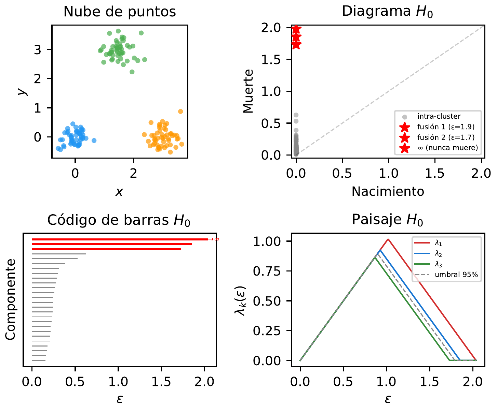
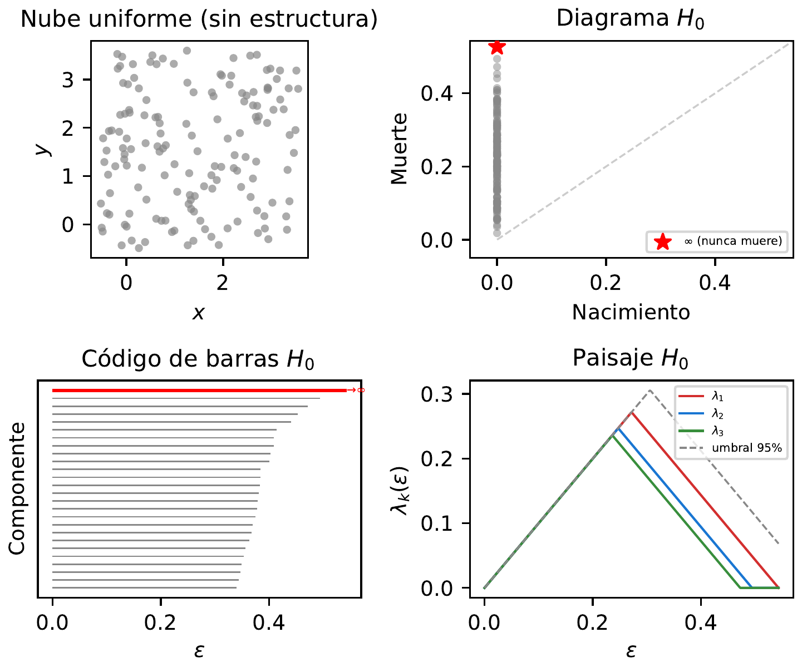
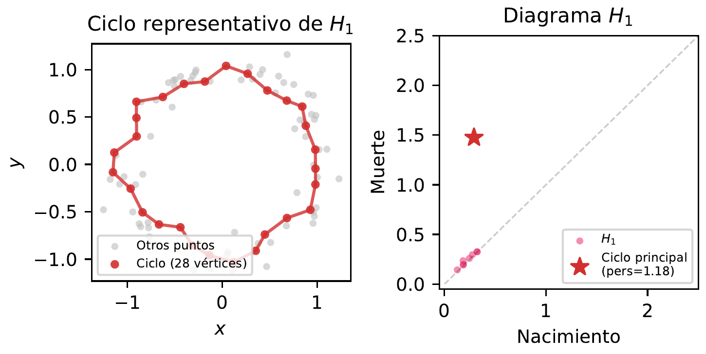
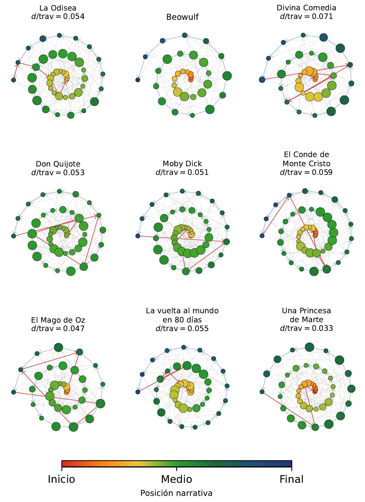
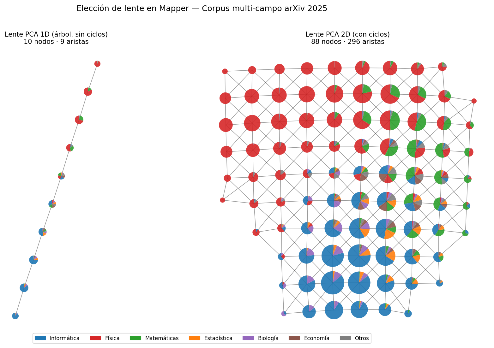
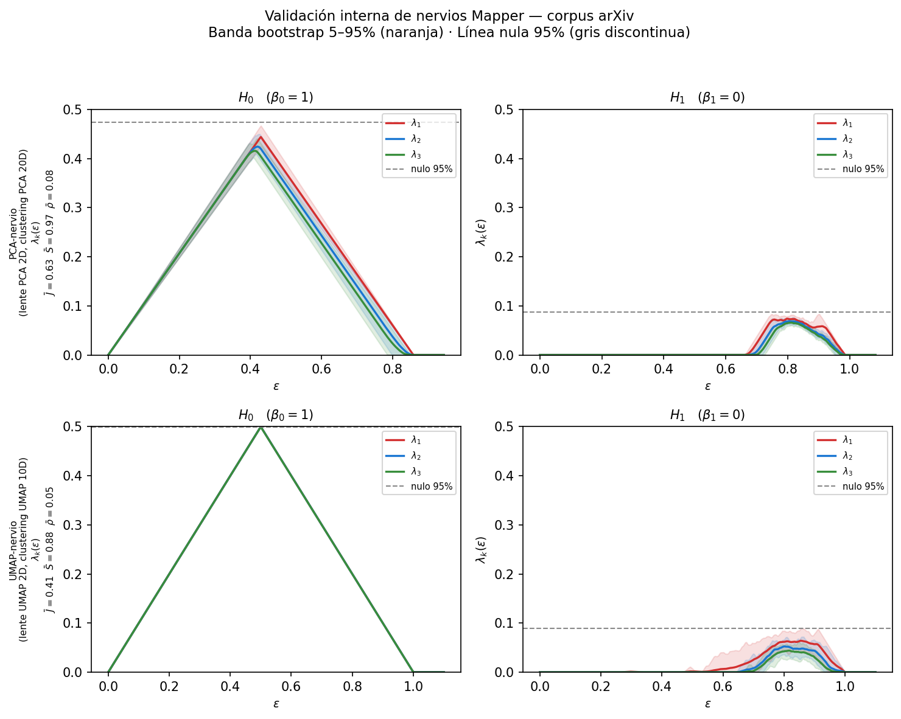
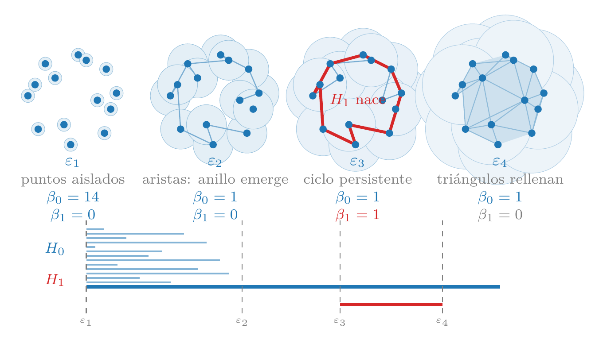
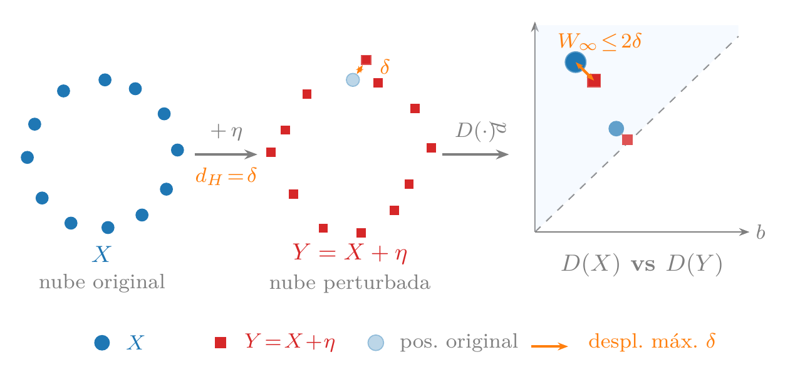
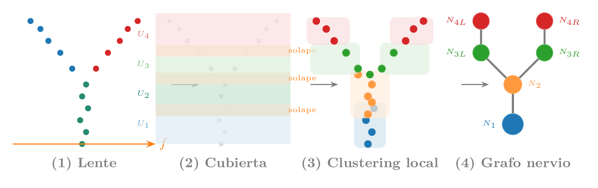

1 Introduction
Topological Data Analysis (TDA) applies tools from algebraic topology to discover the “shape” of data — connected components, holes, cavities — at multiple scales simultaneously. Its key contribution is that these features are invariant under continuous deformations and mathematically stable under perturbations, making them robust descriptors where classical statistics and deep learning see only point clouds. The price: constructing the topological structures scales poorly with dimension and number of points, limiting its practical use to moderately sized datasets.
It was Tuesday morning when Daniel walked into Can Quirze, his usual café in the Eixample, looking for his usual spot — the table in the back, from which you could see the wet street without hearing the traffic noise. Jaume, his favorite professor, had once told him: “You must always keep your enemies in sight.” Well, Daniel, far from having enemies, barely has friends — one or two. How would he have time for enemies? In any case, it seemed like a good idea that oozed the samurai philosophy he so enjoyed reading in Usagi Yojimbo.
What he didn’t expect was to see her.
Mireia. Five years without crossing paths. The last time had been at the master’s graduation party, where Daniel had tried to say something to her, but either she’d ignored him, or the volume was too loud and he’d been too shy.
She was standing at the bar, laptop open, hair pulled up in the same casual bun from their university years. A terracotta wool jacket that clashed absurdly with linen pants. At least in that regard, he was no worse.
Mireia: Daniel! What are you doing here?
Daniel: I live three blocks away. I come almost every day. And you?
Mireia: I’m swamped. I’m working with a bank and trying to understand the “shape” of their customers.
Daniel: The “shape”? Like clustering? Behavior profiles?
Mireia: More literal than it sounds. Customers generate thousands of transactions and patterns. If you represent them as points in a high-dimensional space, that cloud has a shape. Connected components, holes, loops. Topology. I compute the topology of their customers. We’re investigating whether certain customers have a special shape, a shape that might give us a clue about their profile.
Daniel processed the sentence in silence while admiring his former classmate, his mind entering that difficult balance between embarrassment and thirst for adventure. “Topology of bank customers.”
Daniel: And what do you find?
Mireia: Customers who leave don’t leave all at once. There’s an entire “shape” beforehand that announces it. If you detect the topological loops in their behavior before they leave the bank, you can intervene. Classical statistics sees means and variances. Topology sees whether there’s a hole. Anyway, I’m already rambling, because this is confidential.
Mireia’s phone rang.
Mireia: Sorry, I need to take this.
That’s when Daniel realized they’d been talking for three minutes standing at the bar and she was leaving without him having gotten anything concrete — not a coffee, not a LinkedIn, not a phone number. He did the only thing he could think of.
Daniel: Hey, can I have your number?
“I’ve crossed the line,” he thought, and his inner failure laughed at him.
Mireia gave him a smile that Daniel couldn’t quite read — somewhere between kind and slightly amused — and was already picking up the phone with her other hand.
Mireia: No worries, we’ll see each other around here.
And she headed toward the terrace with the laptop under her arm.
Daniel went back to his table. Opened his computer. Closed his computer. Opened it again. “We’ll see each other around here” could mean anything, from “let’s meet next week” to “I’m not going to give you my number but I don’t want to be rude.”
Mireia continued with her work, and she would come tomorrow as always, just before Daniel arrived. She started early, and Daniel clearly had trouble getting out of bed — she thought every day as she saw him in the distance when leaving the café.
“Let’s see if tomorrow I come up with some excuse,” and she arrived a little later. The world isn’t going to end if I’m not at the office by 9. Right?
1.1 Why this technology?
Topological Data Analysis sits in the phase of the book’s technology-opportunity matrix: +11% CAGR in publications, no mentions on Hacker News, 982 GitHub stars, and $106M in funding. It is clearly a technology in the lab, with weak signals across all metrics except academic growth.
Qualitatively, it meets the book’s six technology-selection criteria: (1) it has incipient empirical traction — persistent homology is used in biomedical data analysis, materials science, and sensor networks; (2) it is strange — applying algebraic topology to point clouds is one of the most surprising ideas in this book; (3) its Lindy depth is exceptional — algebraic topology has over a century of development (Poincaré, 1895), and persistent homology crystallized in the early 2000s; (4) its mathematical core — Vietoris-Rips complexes, Betti numbers, and persistence diagrams — is teachable with intuitive geometric examples; (5) it does not overlap with any other chapter in the book; and (6) it is not the market’s main bet — the mainstream analyzes data with statistics and deep learning, not topology.
1.2 Brief history
That century of depth we mentioned is not ornamental. In 1895, Henri Poincaré invented homology to classify surfaces without resorting to coordinates: instead of describing a figure with equations, he described it by counting its structural features — how many separate pieces compose it, how many tunnels pass through it, how many cavities it encloses. These are the same counts that Mireia called holes and loops; the difference is that Poincaré conceived them as a tool for pure mathematics, with no data in sight. Over the following century, algebraic topology flourished in the abstract: proving properties of spaces, classifying manifolds, studying homotopy groups. All beautiful. All useless for analyzing a point cloud, because no one had yet formulated the right question.
That question arrived in 2002. The problem with applying homology to real data was that the result depended entirely on a scale parameter: connect the points too early and everything is an amorphous mass; too late and nothing is connected. Herbert Edelsbrunner, David Letscher, and Afra Zomorodian proposed the obvious-in-retrospect solution: compute the homology at all scales simultaneously and record at which scale each feature is born and at which scale it dies. The name — persistent homology — captures exactly the idea: what persists across a wide range of scales is signal; what is ephemeral is noise. Two years later, Zomorodian and Carlsson completed the practical algorithm, and barcodes — horizontal bars where the length represents how long each feature persists — turned an abstract computation into something readable at a glance.
In 2009, Gunnar Carlsson published “Topology and Data” in the Bulletin of the American Mathematical Society (Carlsson 2009), the text that acted as the field’s manifesto. His central argument was that topology offered data something that neither statistics nor linear algebra could provide: shape descriptors invariant under continuous deformations, that work in any dimension and are mathematically stable — a small perturbation in the data produces a small perturbation in the barcode, not a completely different result. The paper arrived when machine learning was beginning to drown in high-dimensional data and consolidated TDA as a discipline with its own name.
The first applications that backed the enthusiasm came quickly: in 2011, Nicolau, Levine, and Carlsson identified a subgroup of breast cancer with a distinctive mutational profile — and excellent prognosis — that conventional clustering methods had overlooked for years; in 2013, the Mapper algorithm revealed structures in basketball data and political surveys that did not fit any preexisting segmentation. The arrival of efficient libraries — GUDHI (INRIA, 2014) and especially Ripser (2016), which reduced computation time by several orders of magnitude — completed the transition from the mathematical laboratory to applied data analysis. What does that barcode encoding the holes of a real point cloud look like in practice? Before the theory, the best answer is to see it in code.
1.3 Hands on
Before diving into the theory, let’s see TDA in action with seven progressive recipes. The first four are synthetic and build the intuition we’ll need to understand the foundations (Section 1.6): what connected components are, what a hole is, why TDA is robust to noise, and how to locate the specific points that form a topological feature. The last three apply those same ideas to real problems: the hero’s journey myth in classic novels (with the Mapper algorithm), whether scientific disciplines are separate islands or branches of the same tree (with stratified sampling from arXiv), and why UMAP preserves topology where PCA and t-SNE fail (with a torus in high dimension).
The recipes use ripser for persistent homology, gudhi for representative cycles, and kmapper for the Mapper algorithm.
pip install ripser persim gudhi networkx \
scikit-learn numpy matplotlib kmapper1.3.1 Recipe 1: Three islands
We’ll start with the simplest possible case: three groups of random points well separated on a plane. The question is: how many “groups” are there, and at what distance do they merge?
First we generate the points with a normal distribution:
import numpy as np
from ripser import ripser
# Three Gaussian clusters separated by 3 units
rng = np.random.default_rng(42)
centros = np.array([[0, 0], [3, 0], [1.5, 3]])
puntos = np.vstack([
rng.normal(loc=c, scale=0.3, size=(50, 2))
for c in centros
])
print(f"Puntos: {len(puntos)}")We compute only the \(H_0\) range — the zeroth homology group, which counts the number of pieces or connected components:
resultado = ripser(puntos, maxdim=0)
dgms = resultado["dgms"]
print(f"Componentes H0: {len(dgms[0])}")ripser reports 150 features in \(H_0\). Why 150 if there are only 3 clusters? Because ripser works with a filtration: it starts with each point isolated (150 components) and, as a scale parameter \(\varepsilon\) (the filtration radius) increases, connects nearby points relative to \(\varepsilon\). Each time two components merge, one “dies.” The persistence diagram of \(H_0\) records when each component is born and when it dies:
# Components with finite death (those that merged)
finitos = dgms[0][np.isfinite(dgms[0][:, 1])]
muertes = np.sort(finitos[:, 1])[::-1]
print(f"Las 2 fusiones más tardías: "
f"ε = {muertes[0]:.2f}, {muertes[1]:.2f}")The last two mergers occur at \(\varepsilon \approx 2.5\) and \(\varepsilon \approx 2.1\) — the moments when the three clusters unite into two, and then into one. The previous 147 mergers occur at much smaller scales: these are points within each cluster connecting to each other. The difference between these scales — large for the real structure, small for internal noise — is exactly what distinguishes signal from noise. We’ll see this mechanism in more detail when we explain the Vietoris-Rips filtration in Section 1.6.
Computationally, computing only \(H_0\) is cheap: the cost is dominated by the \(O(n^2)\) pairwise distances, followed by a union-find algorithm to track the mergers. For our 150 points in \(\mathbb{R}^2\), the computation is instantaneous.
Figure 1.1 shows three ways to visualize the same topological information from \(H_0\) (connected components). The persistence diagram (top right) represents each component as a point with coordinates (birth, death); points far from the diagonal are signal. The three red stars mark the 3 clusters: two late mergers at \(\varepsilon \approx 2.1\) and \(2.5\), plus the immortal component that never dies (indicated with \(\infty\)). The barcode (bottom left) shows the same information as horizontal bars — the three red bars (including the one extending to \(\infty\)) are the real clusters and stand out from the other bars with short birth-to-death intervals. The persistence landscape (persistence landscape, bottom right) transforms the point diagram into a set of continuous mathematical functions, which enormously facilitates direct statistical analysis. The process is intuitive:
- Building “tents”: Each persistence interval \([b, d]\) (where a feature is born at \(b\) and dies at \(d\)) becomes a triangle or “tent.” This tent sits on the horizontal axis between \(b\) and \(d\), reaching its maximum peak exactly at the midpoint, with a height proportional to its lifespan \((d-b)/2\).
- Persistence layers (\(\lambda_k\)): When overlapping all the tents, they are classified by height. The upper function, \(\lambda_1(\varepsilon)\), defines the outer profile or the highest “envelope” of all combined tents; \(\lambda_2(\varepsilon)\) represents the second-highest layer, and so on. In this way, prominent peaks in the first layers visually expose the most robust and long-lived shapes in the data.
The persistence landscape, containing the same information as the previous diagrams, has the key statistical advantage of being able to produce confidence intervals: unlike traditional scatter diagrams, landscapes belong to a vector space (a Banach space, specifically the space of continuous functions or the \(L^p\) space; typically \(L^1\) or \(L^2\)). This allows treating each landscape as a functional random variable, opening the door to the use of rigorous statistical tools. We can compute the mean of several landscapes, apply the Central Limit Theorem, and, crucially, construct uniform confidence intervals for the mean landscape.
An example of this is the dashed gray line, which represents the 95% significance threshold under the null hypothesis (uniform random noise). Any peak that rises above this threshold can be isolated with full statistical confidence as a real, structural signal, separating it mathematically from background noise.

To appreciate the difference, Figure 1.2 shows the same analysis on a uniform cloud of 150 points (no structure). In the persistence diagram all points are close to the diagonal, that is, a single component; in the barcode all bars are shorter and similar, none stands out because the components merge constantly given the similar inter-point distance to bar length; finally, in the persistence landscape, \(\lambda_1\) does not surpass the null hypothesis threshold — there are no clear separations. This is exactly the signal that TDA captures: real topological structure manifests as high persistence, while noise stays glued to the diagonal.

- Generate four clusters instead of three (Recipe 1). How many late mergers do you expect in \(H_0\)? What if two of the clusters are very close together?
- Ask an LLM: “What is a Vietoris-Rips filtration? Explain it to me with the example of points on a circle.” Compare its answer with the intuition from Recipe 1, where components merged as \(\varepsilon\) grew.
1.3.2 Recipe 2: A ring
If in the first recipe we learned to detect connected components — topologically equivalent to a point — in this second recipe we’ll learn to detect one-dimensional cycles — intuitively, rings or loops — that form \(H_1\), the first homology group.
A traditional statistical analysis would compute the mean (the center) and the variance (the radial spread) of these points — exactly what we’d obtain from a filled disk. TDA, on the other hand, detects that there’s a hole: it distinguishes a donut from a cookie.
In this example, we generate points shaped like a circle and look for the central hole:
import numpy as np
from ripser import ripser
np.random.seed(42)
theta = np.random.uniform(0, 2 * np.pi, 100)
ruido = np.random.normal(0, 0.1, (100, 2))
puntos = np.column_stack([np.cos(theta), np.sin(theta)]) + ruidoNow we request both \(H_0\) and \(H_1\) by setting the maximum dimension to 1:
resultado = ripser(puntos, maxdim=1)
diagramas = resultado["dgms"]
print(f"Características H0 (componentes): {len(diagramas[0])}")
print(f"Características H1 (agujeros): {len(diagramas[1])}")
# The most persistent hole in H1
if len(diagramas[1]) > 0:
persistencias = diagramas[1][:, 1] - diagramas[1][:, 0]
idx = np.argmax(persistencias)
nace = diagramas[1][idx, 0]
print(f"Agujero principal: nace en {nace:.3f}, "
f"muere en {diagramas[1][idx, 1]:.3f}, "
f"persistencia: {persistencias[idx]:.3f}")\(H_0\) shows the same as in Recipe 1: 100 initial components that merge until only one remains — the one that survives with infinite death, confirming that the ring is a single connected piece. Unlike Recipe 1, where the three late mergers produced prominent peaks in the \(H_0\) landscape, here all mergers happen quickly (the points on the circle are close to each other), so the \(H_0\) persistence diagram shows only points glued to the diagonal and the landscape doesn’t surpass the null threshold — there is no clustering structure. The novelty is \(H_1\): among the dozens of features, there is one with very high persistence (\(\approx 1.4\)) and the rest near zero. That persistent feature is the central hole of the circle — a real topological signal. The others are ephemeral artifacts that are born and die quickly as \(\varepsilon\) grows.
The price of going from \(H_0\) to \(H_1\) is computational: ripser needs to consider triangles in addition to edges, and the boundary matrix reduction has worst-case cost \(O(n^3)\) for \(n\) points. For our 100 points it’s instantaneous, but this cubic cost limits TDA to moderately sized datasets. Moreover, each additional homological dimension is dramatically more expensive — \(O(n^4)\) for \(H_2\), and so on. We’ll analyze this scalability in detail in Section 1.5.

The most powerful property of these topological features is their invariance under continuous deformations: if we stretch, bend, or twist the ring without breaking or gluing it, the hole is still there. Figure 1.4 demonstrates this with three different shapes — an oval, a square, and a random curve — that geometrically look nothing alike, but topologically are identical to the circle. In all three cases, \(H_0\) shows a single component (the immortal star, \(\lambda_1\) above the threshold) and \(H_1\) shows a single dominant persistent cycle. Classical statistics would see three very different distributions; topology sees the same shape.

- Generate points on an ellipse instead of a circle (Recipe 2). Does the persistence of the hole in \(H_1\) change? Why?
- What would happen to \(H_1\) if you generated points on a figure “8” (two circles joined together)? How many persistent holes would you expect?
1.3.3 Recipe 3: Signal, noise, and invariance
Recipe 2 showed us that TDA detects the hole generated by a circle. But how well does it resist noise? And what happens if the circle lives in a high-dimensional space and is completely deformed? These two questions — stability under perturbations and dimensional and topological invariance — are the pillars that make TDA a truly useful tool.
1.3.3.1 Stability against noise
Let’s repeat Recipe 2 but now with increasing levels of Gaussian noise (\(\sigma\)):
import numpy as np
from ripser import ripser
niveles = [0.05, 0.15, 0.3, 0.5]
for sigma in niveles:
np.random.seed(42)
theta = np.random.uniform(0, 2 * np.pi, 200)
ruido = np.random.normal(0, sigma, (200, 2))
xy = np.column_stack(
[np.cos(theta), np.sin(theta)])
puntos = xy + ruido
dgms = ripser(puntos, maxdim=1)["dgms"]
h1 = dgms[1]
if len(h1) > 0:
pers_h1 = h1[:, 1] - h1[:, 0]
else:
pers_h1 = [0]
print(f"σ = {sigma:.2f} → "
f"max H1 = {max(pers_h1):.3f}")The result shows a smooth degradation: with \(\sigma = 0.05\) the persistence is high (\(\approx 1.5\)), with \(\sigma = 0.3\) it drops significantly, and with \(\sigma = 0.5\) the hole almost disappears — the noise is as large as the circle’s radius. But the important thing is that the change is gradual: a bit more noise produces a proportionally small change in the diagram. This property will be formalized as the stability theorem in Section 1.6, and it is the mathematical reason why TDA is robust to perturbations.
Figure 1.5 shows the effect with three simultaneous representations. Above, the point clouds with increasing noise. In the middle, the \(H_1\) persistence diagrams: the star marks the main hole, which approaches the diagonal as \(\sigma\) grows. Below, the persistence landscapes \(\lambda_1\): the dominant peak flattens gradually, but never disappears abruptly. Compare with the 95% threshold (dashed line): even with \(\sigma = 0.3\), the peak still surpasses the threshold — the hole remains statistically detectable.

1.3.3.2 The curse of dimensionality
Stability against noise is only half the story. The other half is how TDA behaves when data live in high-dimensional spaces — the typical case in practice: images, genomics, text — everything lives in hundreds or thousands of dimensions.
As the dimension \(d\) grows, a phenomenon known as concentration of measure causes Euclidean distances between points to converge toward the same value. For a circle of radius \(R\) with Gaussian noise of standard deviation \(\sigma\) in \(d\) coordinates, the typical distance between two points is approximately \(\sigma\sqrt{2d}\). When \(\sigma\sqrt{2d}\) exceeds the circle’s diameter (\(\sigma\sqrt{2d} \gtrsim 2R\)), the Vietoris-Rips complex can no longer reliably recover the circular structure: the topological signal approaches the noise level.
To visualize this, we generate a circle of radius \(R = 1.5\) embedded in \(\mathbb{R}^d\) with Gaussian noise \(\sigma = 0.2\) in all coordinates:
import numpy as np
from ripser import ripser
def generar_circulo_ruidoso(n=200, dim=2,
R=1.5, sigma=0.2, seed=42):
"""Circle of radius R in ℝ^2, embedded in ℝ^dim."""
rng = np.random.default_rng(seed)
t = np.linspace(0, 2 * np.pi, n, endpoint=False)
pts = np.zeros((n, dim))
pts[:, 0] = R * np.cos(t)
pts[:, 1] = R * np.sin(t)
pts += rng.normal(0, sigma, (n, dim))
return pts
sigma = 0.2
for dim in [2, 8, 32, 128]:
pts = generar_circulo_ruidoso(dim=dim)
dgms = ripser(pts, maxdim=1)["dgms"]
h1 = dgms[1]
pers = (h1[:, 1] - h1[:, 0]).max() if len(h1) > 0 else 0
disp = sigma * (2 * dim) ** 0.5
print(f"ℝ^{dim} σ√(2d)={disp:.2f} H1={pers:.2f}")With \(d = 2\), the noise spread is \(\sigma\sqrt{2d} \approx 0.57\), small compared to the diameter \(2R = 3\): TDA detects the hole clearly. With \(d = 128\) the spread reaches \(\sigma\sqrt{2d} \approx 3.2\), comparable to the diameter: distances concentrate around a single value and the topological signal of the circle, though present, becomes barely distinguishable from the noise level.
Figure 1.6 shows the contrast. The first row projects the points onto \((x_1, x_{d/2+1})\): in high dimension, \(x_{d/2+1}\) is pure noise and the circle disappears. The second row shows the PCA projection to 2D, which recovers the circle in all cases. The third and fourth rows tell the TDA story: the \(H_1\) diagram shows how the most persistent star approaches the diagonal as \(d\) grows, and the \(\lambda_1\) landscape reflects how the signal-to-noise ratio degrades gradually — the null hypothesis threshold (coordinate permutation) operates at the same distance scale as the real data, so that at \(d = 128\) some \(H_1\) peaks fall near or below the threshold.

PCA works because it seeks the linear projections of maximum variance: in our example, the first two coordinates concentrate all the signal in the \((x_1, x_2)\) plane, which PCA recovers perfectly. Note that this is the most favorable scenario possible for PCA — in real data the signal typically spreads across many correlated dimensions. TDA, by contrast, works with Euclidean distances; as \(d\) grows, the distances converge toward a single value and the topological signal gets buried in the noise fluctuations. This asymmetry motivates preprocessing with UMAP before applying TDA in high dimension, as we will see in Recipe 7.
The first three recipes have given us the basic conceptual tools: \(H_0\) to count components, \(H_1\) to detect holes, persistence to distinguish signal from noise, and the limits of TDA in high dimension. But one natural question remains: if we detect a hole, can we know where it is? Which are the specific points that form it?
- In Figure 1.5, at what \(\sigma\) does the \(H_1\) landscape stop surpassing the 95% threshold? What relationship does that \(\sigma\) have with the circle’s radius?
- In Figure 1.6, PCA recovers the circle at all dimensions while the TDA signal degrades gradually until it becomes barely distinguishable from noise at \(d = 128\). Why does the curse of dimensionality affect TDA more than PCA? In what sense is this a favorable scenario for PCA?
1.3.4 Recipe 4: Representative cycles
So far we’ve detected holes, but we haven’t answered the most natural question: where is the hole? Which are the specific points and edges that form it? This is the inverse problem of TDA: given a homology generator, find a representative cycle — a closed chain of edges that delimits the detected topological feature.
The GUDHI library solves this problem with flag_persistence_generators(): for each persistent feature in \(H_1\) it returns the birth edge — the edge whose insertion in the filtration created the cycle. Why is this sufficient? Because if the edge \((u, v)\) creates a cycle when inserted, it means a path from \(u\) to \(v\) already existed formed by earlier edges. That path, plus the birth edge, forms the complete cycle.
Let’s reuse the ring from Recipe 2:
import numpy as np
import gudhi
import networkx as nx
np.random.seed(42)
theta = np.random.uniform(0, 2 * np.pi, 100)
ruido = np.random.normal(0, 0.1, (100, 2))
puntos = np.column_stack(
[np.cos(theta), np.sin(theta)]) + ruido
# Build the Rips complex with GUDHI
rips = gudhi.RipsComplex(
points=puntos, max_edge_length=2.5)
st = rips.create_simplex_tree(max_dimension=2)
st.compute_persistence(homology_coeff_field=2)Now we extract the \(H_1\) generators. Each row contains four vertices: the two from the birth edge and the two from the death edge:
gens = st.flag_persistence_generators()
h1_gens = gens[1][0] # shape (m, 4)
# Most persistent row (first):
u, v = int(h1_gens[0, 0]), int(h1_gens[0, 1])
birth_scale = st.filtration([u, v])
print(f"Arista de nacimiento: ({u}, {v}) "
f"a escala {birth_scale:.4f}")To reconstruct the complete cycle, we find the shortest path from \(u\) to \(v\) using only edges inserted before the birth edge:
# Graph with edges prior to the birth edge
G = nx.Graph()
for simplex, filt in st.get_filtration():
if len(simplex) == 2 and filt < birth_scale:
G.add_edge(simplex[0], simplex[1])
ciclo = nx.shortest_path(G, u, v)
print(f"Ciclo: {len(ciclo)} vértices")The result is a closed path of 28 vertices that traverses the ring, covering 350° of angular arc — exactly the chain of points that encloses the central hole. When visualized over the point cloud (in red on Figure 1.7), we see a closed polygon that delimits the empty region.
The computational cost has two phases. The first — building the simplex tree and computing persistence — is the same \(O(n^3)\) as in previous recipes. The second — reconstructing the cycle — is comparatively cheap: building the subgraph of edges prior to birth is \(O(|E|)\) where \(|E|\) is the number of edges in the complex, and the shortest path in the graph (BFS) is \(O(n + |E|)\). For 100 points, both phases are instantaneous.
Why does this matter? Because in real applications — neural networks, gene expression, finance — detecting that “there’s a cycle” is only the first step. What the researcher needs to know is which specific genes, neurons, or assets form that cycle. The representative cycle provides exactly that information: it turns a topological abstraction into a concrete list of domain entities.

The main limitation is that the representative cycle is not unique: there may exist multiple homologous cycles (topologically equivalent) that enclose the same hole. Our reconstruction returns the shortest in number of edges at the birth scale, but there are other algorithms that seek the optimal cycle according to different criteria (minimum geometric length, minimum enclosed area). In practice, the shortest path is sufficient to locate the region of interest.
With this recipe we complete the persistent homology toolbox: we know how to count components (\(H_0\)), detect holes (\(H_1\)), distinguish signal from noise (persistence), work in high dimensions (invariance), and now locate the detected features (representative cycles). Before moving on to real data, we have one more complementary tool: the Mapper algorithm, which produces directly interpretable graphs instead of abstract diagrams.
- Modify the code to extract the representative cycles of the two most persistent cycles in \(H_1\) of a cloud with two concentric rings. Do the points overlap?
- Ask an LLM: “What is the difference between a representative cocycle and a representative cycle in persistent homology? Why does ripser return cocycles?”
1.3.5 Recipe 5: Mapper and the Hero’s Journey
In 1949, Joseph Campbell published The Hero with a Thousand Faces, where he argued that all great stories follow a circular pattern: the protagonist leaves home, faces trials, and returns transformed. If Campbell is right, the shape of a novel should be a loop — and with the right tool, we should be able to see it directly.
The Mapper algorithm is that tool. Unlike persistent homology — which summarizes shape in abstract diagrams — Mapper builds a simplified graph that is topologically equivalent and that we can inspect visually. Its operation is intuitive:
- Lens function (lens): We choose a function that projects the data onto a low-dimensional space. Mapper uses this projection to organize the cover.
- Overlapping cover: We divide the range of the lens into overlapping intervals. Each interval contains a subset of the data.
- Local clustering: Within each interval, we group the points by similarity (DBSCAN, for example).
- Connection: Two clusters from adjacent intervals are connected by an edge if they share points (those in the overlap).
The resulting graph captures the “shape” of the data: nodes are groups of similar points, and edges reflect overlap between neighboring groups. The choice of lens function is crucial — we’ll return to it after explaining how to turn text into numerical data.
To apply Mapper to text we need to convert a novel — a continuous stream of words — into a point cloud. The process has two steps: chunking and embedding.
Chunking consists of dividing the text into overlapping fixed-size windows. We use windows of 500 words with 50% overlap (a stride of 250 words). Each window captures roughly one narrative “scene” — enough context for the meaning to be coherent, but not so much as to mix distinct topics. The overlap ensures we don’t lose transitions between scenes: every point in the narrative appears in at least two consecutive windows.
Embedding transforms each text window into a numerical vector. We use the all-MiniLM-L6-v2 model from the sentence-transformers library: a neural network trained to place semantically similar texts at nearby points in vector space. The result is a 384-dimensional vector per window — the ambient space in which we work. For a typical 125,000-word novel, this produces roughly 500 points in \(\mathbb{R}^{384}\).
Why 384 dimensions? That’s the size the model designers chose to balance expressiveness and efficiency. But the intrinsic dimensionality of language — the number of real degrees of freedom that semantics requires — is much smaller. Recent research estimates that text embeddings live on manifolds of between 5 and 20 effective dimensions, depending on the task and corpus. It is precisely this discrepancy between the ambient dimensionality (384) and the intrinsic one (~10–20) that makes TDA work: the data form a low-dimensional manifold with non-trivial topology — loops, holes, branches — that the techniques we’ve seen can detect.
1.3.5.1 Choosing the lens
Now that we know each novel is a point cloud in \(\mathbb{R}^{384}\), the critical question remains: what lens function should we use in Mapper?
A first intuition would be to use narrative position (from 0% to 100%): divide the novel into temporal bands and group passages within each band by similarity. With a temporal lens, a linear chain would indicate a narrative with no return, and a loop would indicate that the ending resembles the beginning. However, this choice has a fundamental problem: the temporal lens forces a nearly linear topology. If the intervals cover time bands, clusters from non-adjacent bands rarely share points (overlap only occurs between contiguous intervals), necessarily producing a chain — regardless of whether the story is circular or not. The temporal lens assumes the very structure we want to detect.
The alternative is to use a semantic lens: the first two principal components (PCA) of the embeddings. This lens groups passages by meaning, not by temporal order. If the end of a novel resembles the beginning semantically, both will fall into the same intervals of the PCA lens and end up in the same clusters — creating edges between “early” and “late” nodes. With a PCA lens, the graph reflects the actual semantic structure of the narrative, and any circularity detected is genuine.
We downloaded nine classic novels from Project Gutenberg (all in the public domain) and applied this chunking + embedding process. The pre-computed results are in code/tda/data/hero_books.npz.
import numpy as np
import kmapper as km
from sklearn.decomposition import PCA
from sklearn.cluster import DBSCAN
data = np.load("code/tda/data/hero_books.npz",
allow_pickle=True)
embeddings = data["embeddings"] # (6147, 384)
positions = data["positions"] # posición narrativa [0, 1]
book_ids = data["book_ids"] # índice del libro
book_names = [str(n) for n in data["book_names"]]We apply Mapper to each novel with two independent reductions: a 2D PCA for the lens (which organizes the cover grid) and a 20D PCA for clustering. The 20 components cover the mid-range of the estimated intrinsic dimensionality of sentence embeddings (~10–30 dimensions), with a distance coefficient of variation of ~32% that makes DBSCAN discriminative; if we used the original 384 components directly, all distances would concentrate around the same value and DBSCAN couldn’t distinguish neighbors from non-neighbors:
mapper = km.KeplerMapper(verbose=0)
for i, name in enumerate(book_names):
mask = book_ids == i
emb = embeddings[mask]
pos = positions[mask]
# Lente semántica: PCA 2D independiente
# (organiza la cuadrícula de cobertura Mapper)
lens = PCA(n_components=2).fit_transform(emb)
# Clustering: PCA 20D independiente
# (rango medio de dimensión intrínseca, CV ~32%)
emb_clust = PCA(n_components=20).fit_transform(emb)
# Construir el grafo Mapper
graph = mapper.map(
lens, emb_clust,
cover=km.Cover(n_cubes=7,
perc_overlap=0.35),
clusterer=DBSCAN(eps=1.5,
min_samples=3))
n_nodes = len(graph["nodes"])
n_edges = sum(
len(v) for v in graph["links"].values())
print(f" {name:20s} "
f"nodos={n_nodes}, aristas={n_edges}")The result produces graphs with between 32 and 43 nodes for all novels. Each node is a cluster of thematically similar passages, and each edge indicates overlap between clusters — points that belong to more than one cluster thanks to the cover overlap. The graphs are so dense that the mere presence of cycles means nothing — the circularity is a combinatorial artifact of the density, not a narrative signature.
1.3.5.2 The return as graph distance
To validate Campbell’s hypothesis we need a more precise question: is the ending of the novel semantically close to the beginning? Specifically, if Campbell is right, the return path — from the last node to the first through the graph’s semantic edges — should be short compared to the total journey.
We define the metric \(d/\text{trav}\):
- \(d\) = distance (shortest path) between the initial and final nodes in the Mapper graph.
- \(\text{trav}\) = sum of distances between consecutive nodes in chronological order — the “cost of the journey.”
- \(d/\text{trav}\) = relative cost of the return. If Campbell is right, this ratio should be anomalously low.
To assess “anomalously low,” we use a cyclic shift test: we imagine the narrative as a cycle (the end connects to the beginning) and try all possible cut points. If we cut between nodes \(i\) and \(i{+}1\), the new “beginning” is node \(i{+}1\) and the new “end” is node \(i\). This gives us \(k{-}1\) null ratios to compare the real one against.
Figure 1.8 visualizes the results with a spiral hypergraph: each node is placed on a spiral that advances with the narrative (from center outward), gray edges are the Mapper’s semantic connections, blue arrows mark the chronological traversal, and red arrows show the return path — the shortest route through the semantic graph from the end back to the beginning. Color indicates narrative position: red (start) \(\to\) orange \(\to\) green \(\to\) dark blue (end).

The cyclic test results are striking:
| Novel | \(|V|\) | \(d\) | trav | \(d/\text{trav}\) | \(\mu_{\text{nulo}}\) | \(p\) |
|---|---|---|---|---|---|---|
| Odisea | 39 | 4 | 86 | 0.047 | 0.026 | 0.974 |
| Beowulf | 32 | — | 181 | — | 0.015 | 1.000 |
| Divina Comedia | 33 | 6 | 68 | 0.088 | 0.030 | 1.000 |
| Don Quijote | 36 | 5 | 84 | 0.060 | 0.028 | 0.971 |
| Moby Dick | 39 | 6 | 93 | 0.065 | 0.026 | 1.000 |
| Monte Cristo | 43 | 2 | 106 | 0.019 | 0.024 | 0.524 |
| Mago de Oz | 33 | 5 | 106 | 0.047 | 0.031 | 0.938 |
| Vuelta al mundo | 43 | 5 | 91 | 0.055 | 0.023 | 1.000 |
| Princesa de Marte | 42 | 3 | 91 | 0.033 | 0.024 | 0.902 |
The value \(p \approx 1.0\) for all novels means exactly the opposite of what Campbell predicts: the beginning and end of a novel are farther apart semantically than any two consecutive points. Why? Because chronologically adjacent nodes tend to be at distance 1–2 in the semantic graph — the text changes gradually. But the beginning and end are the narrative extremes: authors open and close with deliberately distinct tones, vocabularies, and contexts. In the extreme case of Beowulf, the graph is outright disconnected between the initial and final nodes: no semantic path connects them at all — the furthest possible case from Campbell’s prediction.
1.3.5.3 An honest negative result
This analysis does not validate Campbell’s hypothesis. A natural counterargument would be: “maybe the return isn’t semantic but geographic — the hero returns to the same place, not the same theme.” We checked: filtering only passages that mention geographic locations (detected with named entity recognition: cities, countries, regions) and repeating the full analysis, the results are indistinguishable — \(d/\text{trav}\) doesn’t improve for any novel.
The conclusion is straightforward: the monomyth theory, at least operationalized as proximity in embedding space — whether from full text or filtered by locations — does not produce a detectable signal. This aligns with decades of criticism of Campbell: the circularity he describes is so flexible that it can be projected onto almost any narrative post hoc, but it does not generate falsifiable predictions when formalized. TDA gives us the rigorous tool to quantify the shape of a narrative — and that tool tells us novels are not circular.
The advantage of Mapper over pure persistent homology is direct interpretability: we don’t need to interpret an abstract diagram — we can see the shape of the story in the hypergraph. Each node corresponds to a group of thematically similar passages, and each edge indicates semantic proximity. The spiral simultaneously reveals temporal structure (position) and semantic structure (connections), making explicit why the return doesn’t work: the red arrows cross nearly the entire graph.
The limitation is that Mapper depends on parameters — number of intervals, overlap percentage, clustering algorithm — and the resulting graph can change with these settings. In practice, if the structure is robust (like a clear hero’s journey), it appears across a wide range of parameters.
- If you used narrative position (time) as the lens instead of PCA, what topology would you expect in the Mapper graph? Why can’t that choice of lens detect circularity?
- Modify the Mapper parameters (
n_cubes,perc_overlap) and observe how the graph changes for The Odyssey. At what parameters does \(\beta_1\) drop to zero? Is the graph density robust or an artifact of the configuration? - The cyclic test shows that the beginning and end of novels are farther apart than average. Design an alternative test: instead of \(d/\text{trav}\), use the direct cosine similarity between the mean embedding of the first and last chunks. Does the conclusion change?
- Ask an LLM: “What are the main academic criticisms of Joseph Campbell’s monomyth theory?” Compare with our quantitative result.
1.3.6 Recipe 6: The Tree of Science
Do scientific disciplines have real topological boundaries — voids in semantic space that no researcher crosses — or are they simply dense zones of a single continuous manifold? The question is not rhetorical: if science is a single continent, “distant” fields like computational biology and high-energy physics should be connected by bridges of interdisciplinary papers without any significant void. If there are islands, there would be communities speaking different languages with no shared vocabulary and no intermediary.
To answer rigorously, we downloaded 8,085 articles from arXiv in 2025 using proportional stratified sampling: we allocated a budget of 10,000 draws across 29 categories in proportion to their publication volume that year — the 29 categories total approximately 200,000 submissions in 2025, so the resulting corpus of 8,085 articles represents roughly 4% of available output. The pre-computed data is in code/tda/data/arxiv_ciencia.npz.
The corpus covers seven macro fields: Computer Science (3,181 papers), Physics (2,455), Mathematics (978), Statistics (432), Biology (432), Economics (283), and Other (324).
We load the data and apply a preliminary dimensionality reduction. The embeddings live in \(\mathbb{R}^{384}\), but as we saw in the limitations section, at that dimensionality Euclidean distances concentrate — all pairs of points end up at a similar distance — and ripser loses the resolution to distinguish real separations from noise. Reducing to 50 principal components preserves 58% of explained variance — enough to retain the semantic differences between disciplines — while recovering the geometric discrimination that ripser needs:
import numpy as np
from sklearn.decomposition import PCA
data = np.load("code/tda/data/arxiv_ciencia.npz",
allow_pickle=True)
emb = data["embeddings"] # (8085, 384)
titles = data["titles"]
cats = data["categories"] # e.g. "cs.LG"
# MACRO_FIELD asigna cada categoría a su campo macro
# (definido en diagrama_ciencia.py)
fields = np.array([MACRO_FIELD.get(c, "Otros") for c in cats])
emb_red = PCA(
n_components=50, random_state=42
).fit_transform(emb)1.3.6.1 What are the branches of science?
The most direct question one can ask about the corpus is how many independent branches science has: is there a single continuous manifold, or do topologically isolated communities exist — islands — that share no bridges with the rest? Answering requires two steps: measuring the geometric separation between fields (to identify island candidates) and then applying the topological test (to determine whether that separation exceeds the statistical noise threshold).
We first check the geometric distances between the centroids of each field in the embedding space:
field_names = list(np.unique(fields))
centroids = {f: emb_red[fields == f].mean(axis=0)
for f in field_names}
print("Distancias entre centroides:")
for i, f1 in enumerate(field_names):
for f2 in field_names[i+1:]:
d = np.linalg.norm(centroids[f1] - centroids[f2])
print(f" {f1} – {f2}: {d:.4f}")Distances range from 0.31 (Computer Science–Statistics, the closest) to 0.60 (Physics–Biology, the farthest apart). There is real geometric separation between disciplines, which opens the possibility that multiple branches exist. The topological question is whether that separation exceeds the noise threshold: if it does, there is more than one branch; if not, science is a single connected continent.
We compute \(H_0\) with ripser on the reduced corpus and estimate the 95% significance threshold via bootstrap (200 permutations of 500 random uniform points in the bounding box; the full protocol is developed in Section 1.6.2.1):
from ripser import ripser
dgms = ripser(emb_red, maxdim=0)["dgms"]
h0 = dgms[0]
rng = np.random.default_rng(42)
low, high = emb_red.min(axis=0), emb_red.max(axis=0)
null_max = []
for _ in range(200):
pts = rng.uniform(low, high, size=(500, emb_red.shape[1]))
h = ripser(pts, maxdim=0)["dgms"][0]
fin = h[np.isfinite(h[:, 1])]
pers = fin[:, 1] - fin[:, 0]
null_max.append(pers.max() if len(fin) else 0)
thresh = np.percentile(null_max, 95)
finite_h0 = h0[np.isfinite(h0[:, 1])]
pers_h0 = finite_h0[:, 1] - finite_h0[:, 0]
N_RAMAS = int((pers_h0 > thresh).sum()) + 1
print(f"Umbral 95% = {thresh:.4f}")
print(f"Barra más larga = {pers_h0.max():.4f}")
print(f"N_RAMAS = {N_RAMAS}")The result is decisive: N_RAMAS = 1. The 95% bootstrap threshold sits at 1.67; the longest \(H_0\) bar barely reaches 0.70 — only 42% of the threshold. Although disciplines are geometrically separated, the deepest gap between any pair of fields is less than half of what would be needed to constitute a topologically significant island.
The interpretation is precise: there always exists a continuous path of papers through semantic space connecting any pair of disciplines without crossing a statistically significant void. Computer Science and Physics are not islands; they are dense regions of the same continuous manifold, joined by papers on computational physics, quantum simulation, and machine learning for condensed matter.
Figure 1.9 shows the result. The \(H_0\) persistence diagram (left) concentrates all points near the diagonal — no bar exceeds the null threshold (dashed line). The \(\lambda_1\) landscape (right) stays below the threshold across the entire range. Compare with Recipe 1 (three separate islands): there \(\lambda_1\) clearly exceeded the null line. Here, science is a continuum.

Single linkage clustering is the only hierarchical variant that exactly reproduces the connected components of the Vietoris-Rips filtration. Other variants — Ward, complete linkage, average linkage — produce different dendrograms and have no direct topological interpretation in terms of \(H_0\). See Section 1.6.2.1 for the proof.
1.3.6.2 How are disciplines organized in semantic space?
The result \(H_0 = 1\) does not say that science is homogeneous; it says that it is connected. The next question is visual and structural: how are the fields distributed in semantic space? Are there clearly separated regions, or does everything blend together?
For this particular corpus, a 1D PCA lens would capture the axis of maximum variance: the gradient between formally symbolic fields — pure mathematics, theoretical physics, laden with symbols and proofs — at one end, and empirical-statistical fields — biology, economics, data science, with experimental and probabilistic vocabulary — at the other. The resulting Mapper has exactly 10 nodes and 9 edges — the definition of a tree (\(N\) nodes, \(N-1\) edges, no cycles). The mathematical-physical trunk can bifurcate into abstract algebra and computational physics, but transversal connections remain invisible: statistical machine learning papers, which mix CS and statistics vocabularies, fall at very different points along the PC1 axis; since their cover intervals do not overlap in that single dimension, they create no edge between those two regions. With the 2D PCA lens, the second principal component adds an axis that roughly separates life sciences from physical and computational sciences: now a patch can overlap with neighbors in both the PC1 and PC2 directions, and those transversal connections materialize as edges in the graph. The result — 88 nodes and 296 edges — includes cycles that reflect the true interdisciplinary network.
Figure 1.10 shows both graphs side by side with the same field color palette. The difference is visual and immediate: the left panel (1D lens) is a chain with some branching; the right panel (2D lens) is a dense network with multiple cycles.

import kmapper as km
from sklearn.cluster import DBSCAN
# Lente: PCA 2D independiente
# (organiza la cuadrícula de cobertura)
lens = PCA(
n_components=2, random_state=42
).fit_transform(emb)
# Clustering: PCA 20D independiente
# (dimensión intrínseca ~10-30D, CV de distancias ~32%)
emb_clust = PCA(
n_components=20, random_state=42
).fit_transform(emb)
mapper = km.KeplerMapper(verbose=0)
graph = mapper.map(
lens, emb_clust,
cover=km.Cover(n_cubes=10, perc_overlap=0.4),
clusterer=DBSCAN(eps=2.0, min_samples=3),
)
n_nodes = len(graph["nodes"])
n_edges = sum(len(v) for v in graph["links"].values())
print(f"Mapper: {n_nodes} nodos, {n_edges} aristas")The result is 88 nodes and 296 edges — a 2D graph with cycles and branching, very different from the chain a 1D lens would have produced. Each node is a cluster of thematically similar papers within a patch of the PCA grid; each edge indicates that two clusters share papers in the overlap zone. Nodes colored by field reveal the geography of the corpus: Computer Science and Physics occupy dense regions in the center; Mathematics and Statistics form an intermediate strip; Biology and Economics appear at the peripheries. Nodes with multi-colored sectors are the interdisciplinary bridges: papers that fall on the boundary between regions and connect vocabularies from two or more disciplines.

1.3.6.3 Implications for the scientist
This result has a direct consequence for anyone who researches or innovates in any field. If science is a single continuous manifold, the question is not “which island does my idea belong to?” but “in which region of the continent am I, and what are the adjacent less-explored zones?” The peripheral Mapper nodes — the inter-field bridges — point to exactly those zones: papers that have already crossed the disciplinary boundary and that open paths toward the vocabulary and techniques of the neighboring field.
The same workflow — stratified collection, \(H_0\) with bootstrap, Mapper with a 2D PCA lens — can be run on any subset of the corpus to ask more specific questions: “Is the quantum simulation subfield an island within Physics, or is it connected to Computer Science?”; “Which papers connect econometrics with Bayesian statistics?” The complete code is in code/tda/diagrama_ciencia.py.
- The analysis produces N_RAMAS = 1 at 95% confidence over 29 arXiv 2025 categories. Would the result change if we include only the 5 largest categories (cs.LG, cs.CV, cs.CL, quant-ph, hep-th)? Why?
- The longest \(H_0\) bar has persistence 0.70 — 42% of the threshold 1.67. Interpret this value: which pair of disciplines produces that bar? What kind of papers would form the “minimum bridge” connecting them?
- The Mapper graph with a 1D PCA lens produces a tree (10 nodes, 9 edges, no cycles). What would it imply for the structure of scientific knowledge if there were a cycle in the Mapper graph? What kind of papers would form that cycle?
- The ripser analysis shows \(\beta_1 = 0\): no statistically significant \(H_1\) cycle exists in the arXiv corpus. If, hypothetically, a persistent cycle above the threshold had appeared, what would it mean to extract its representative cycle (see Recipe 4)? Which disciplines or subfields would you expect to form that semantic loop?
1.3.7 Recipe 7: UMAP and Topological Dimensionality Reduction
In the previous recipes we worked with low-dimensional data (Recipes 1–4) or reduced it beforehand with PCA (Recipes 5–6). Dimensionality reduction is not optional: in high dimensions, Euclidean distances concentrate and the Vietoris-Rips filtration loses resolution (see Section 1.5 for details). PCA is the most common option, but it is a linear transformation — it projects onto the subspace of maximum variance without considering the topological structure of the data. What happens when the data has an intrinsically nonlinear shape embedded in high dimensions?
This recipe uses an object whose topology we know a priori — a torus with \(\beta_1 = 2\) — to compare PCA and UMAP as dimensionality reduction steps before applying persistent homology. With the correct answer known in advance, we can evaluate the validation protocol from Section 1.6.8 under controlled conditions: if UMAP passes the protocol and PCA fails, we have evidence that the protocol correctly discriminates between a faithful and an unfaithful reduction.
A torus (the surface of a donut) is the perfect example: its topology has two independent cycles — one “around the hole” and another “through the tube” — which manifest as rank 2 in \(H_1\), or in other words, a Betti number \(\beta_1=2\). If we generate 1,000 points on a torus and embed them in \(\mathbb{R}^{50}\) via a random nonlinear transformation — specifically, \(\mathbf{p} = \sin(\mathbf{x}_{3D} \cdot W + \phi)\) where \(W\) is a random matrix — the question is: which dimensionality reduction method better preserves these two cycles? The nonlinearity is essential: with a simple orthogonal rotation, PCA could invert it exactly and recover both cycles without difficulty. By using a nonlinear transformation, we block that easy escape and truly test each method’s ability to navigate a deformed manifold.
First we generate a three-dimensional torus with radii \(R=2\) and \(r=1\) — a 2:1 ratio that makes the two cycles comparable in size — and embed it in \(\mathbb{R}^{50}\) with the nonlinear transformation described:
import numpy as np
def generar_toro(n=1000, R=2.0, r=1.0,
dim_ambiente=50, ruido=0.08, seed=42):
"""Toro ruidoso incrustado en R^dim_ambiente."""
rng = np.random.default_rng(seed)
theta = rng.uniform(0, 2 * np.pi, n) # ciclo mayor
phi = rng.uniform(0, 2 * np.pi, n) # ciclo menor
x = (R + r * np.cos(phi)) * np.cos(theta)
y = (R + r * np.cos(phi)) * np.sin(theta)
z = r * np.sin(phi)
toro_3d = np.column_stack([x, y, z])
# Incrustar en R^dim_ambiente con proyección senoidal:
# puntos = sin(toro_3d @ W + fase)
# Suave (UMAP preserva vecindades) pero no lineal
# (PCA no puede invertirla y pierde el ciclo menor).
rng2 = np.random.default_rng(seed + 1)
W = rng2.standard_normal((3, dim_ambiente)) * 0.7
fase = rng2.uniform(0, 2 * np.pi, dim_ambiente)
puntos = np.sin(toro_3d @ W + fase)
puntos += rng2.normal(0, ruido * 0.3, puntos.shape)
return puntos, theta, phi
puntos, theta, phi = generar_toro(n=1000, dim_ambiente=50)
print(f"Toro: {puntos.shape}")We reduce dimensionality with two methods — PCA and UMAP — and compute \(H_1\) on each 3D reduction:
from sklearn.decomposition import PCA
import umap
from ripser import ripser
# PCA: proyección lineal (máxima varianza)
red_pca = PCA(n_components=3).fit_transform(puntos)
# UMAP: preservación de estructura topológica
red_umap = umap.UMAP(
n_components=3, n_neighbors=15,
min_dist=0.1, random_state=42,
).fit_transform(puntos)
for nombre, red in [("PCA", red_pca), ("UMAP", red_umap)]:
dgms = ripser(red, maxdim=1)["dgms"]
h1 = dgms[1]
pers = h1[:, 1] - h1[:, 0]
pers_fin = pers[np.isfinite(pers)]
umbral = 0.3 * pers_fin.max()
n_ciclos = int((pers_fin > umbral).sum())
print(f"{nombre}: {n_ciclos} ciclos "
f"(max pers = {pers_fin.max():.3f})")The results are:
| Method | \(\beta_1\) detected | \(\lambda_2\) exceeds null line | Narrow bootstrap band | Validation |
|---|---|---|---|---|
| PCA | 1 (expected: 2) | No | Yes | Fails |
| UMAP | 2 ✓ | Yes | Yes | Passes |
PCA, being linear, flattens the torus onto a plane: it preserves the major cycle (the “around the hole” one, which explains more variance) but loses the minor cycle (the “through the tube” one). UMAP consistently recovers both cycles with persistence clearly above the 95% null threshold.
Figure 1.12 makes this visible. The left column is the reference: the original torus in \(\mathbb{R}^3\), with the color gradient \(\theta\) running continuously along the tube. The center column (PCA) and the right column (UMAP) show the 3D projections after the nonlinear embedding. Here is the visual trap: the PCA projection may offer clean geometry — an ellipsoid or even a cloud that resembles a donut — while the UMAP projection may look geometrically more distorted. This is exactly what we expect: PCA maximizes variance, not topology, and with a nonlinear embedding it can recover apparently reasonable geometry; UMAP maximizes the preservation of local connectivity, which produces geometrically irregular but topologically correct shapes in 3D. The middle row resolves the ambiguity: the \(H_1\) persistence diagrams show two stars (two persistent cycles) only with UMAP, while PCA detects barely one. The persistence of each cycle — its topological “importance” — is read as the vertical distance to the diagonal (death − birth), not as the absolute position on the \(y\)-axis: a star at coordinates (0.4, 2.2) has persistence 1.8, even though its \(y\)-value is 2.2. This distance is exactly twice the corresponding peak in the landscape (bottom row): if λ₁ reaches a height of 0.9, the associated star is at distance 1.8 from the diagonal. So the two indicators are redundant and confirm each other. The bottom row confirms with the persistence landscape: only UMAP has layers \(\lambda_1\) (red) and \(\lambda_2\) (blue) exceeding the 95% null threshold (dashed line), statistically confirming the recovery of \(\beta_1 = 2\). Visual appearance is misleading; the landscape is the topological truth.
Why does UMAP preserve both cycles while PCA loses one? The detailed explanation will be in Section 1.6.9: in short, UMAP is internally a TDA algorithm that explicitly optimizes the preservation of the simplicial structure of the data, while PCA maximizes variance with no topological guarantees.
This protocol — \(\beta_k\) consistency + bootstrap band + null line — is the general tool for validating any dimensionality reduction prior to TDA. In Recipe 7 we knew the answer and could confirm that the protocol discriminates correctly. In Recipe 8 we will apply it to real data where the answer is not known in advance: in that context, “internal consistency” is redefined as agreement between the \(\beta_k\) of the Mapper nerve and the \(\beta_k\) computed with ripser directly on the reference embeddings.

The practical implication is clear: when we have high-dimensional data and want to apply persistent homology, UMAP is the natural reduction step — not because it is “better” in a generic sense, but because its mathematical objective (preserving the fuzzy simplicial structure) is aligned with what ripser will measure afterward. PCA is a fast and deterministic alternative, but being linear it can lose nonlinear structure such as the two cycles of the torus.
The complete code is in code/tda/umap_reduccion.py.
- The torus has \(\beta_1 = 2\). How many persistent cycles would you expect in \(H_1\) if the data were a sphere (\(S^2\)) in \(\mathbb{R}^{50}\)? What about a 3-dimensional torus (\(T^3 = S^1 \times S^1 \times S^1\))?
- UMAP uses \(k\) neighbors to calibrate the local scale. Experiment with \(k = 5\), \(k = 15\), and \(k = 50\): how does it affect the number of cycles detected by
ripser? Is there an optimal value, or is it robust? - Ask an LLM: “Explain why UMAP preserves global topology better than PCA when the data has nonlinear structure.”
- Apply UMAP as the lens function — instead of PCA — in the Mapper from Recipes 5 and 6. What structure do you expect to see in the resulting graph? How do you predict the \(d/\text{trav}\) ratios (Recipe 5) and the number of nodes and edges (Recipe 6) will change?
1.3.8 Recipe 8: UMAP and Mapper Applied to the Hero’s Journey and the Tree of Science
Recipes 5 and 6 use PCA as the Mapper lens function: they project the embeddings onto the first two principal components and build the graph from that linear plane. Recipe 7 showed that UMAP preserves non-linear structure better than PCA — but in a different context: as a dimensionality reduction step before ripser, going from \(\mathbb{R}^{384}\) down to \(\mathbb{R}^3\) to compute persistent homology. This recipe closes the loop and poses the natural question: what happens if we replace PCA with UMAP as the Mapper lens function, without any additional dimensionality reduction?
The distinction matters. In Recipe 7, UMAP reduces — the three resulting components feed directly into ripser. Here, UMAP organizes the cover: the two UMAP components act as coordinates for the grid over which Mapper builds its patches, but the clustering within each patch is done in the original high-dimensional space. We are not reducing to compute homology — we are reducing only to define the lens.
1.3.8.1 The Hero’s Journey with UMAP Lens
We return to the embeddings of the nine novels from Recipe 5 and apply the same principle of two independent reductions, replacing PCA with UMAP in both. The lens goes from PCA(2) to UMAP(2): instead of projecting onto the two axes of maximum linear variance, Mapper lays its grid over the non-linear semantic manifold learned by UMAP. The clustering goes from PCA(20) to UMAP(10): the coefficient of variation of distances rises from 32% to ~45%, making DBSCAN more precise when separating groups within each patch. Narrative position remains the basis of the spiral visualization but plays no part in the lens.
import numpy as np
import kmapper as km
import umap
from sklearn.cluster import DBSCAN
data = np.load("code/tda/data/hero_books.npz",
allow_pickle=True)
embeddings = data["embeddings"]
positions = data["positions"]
book_ids = data["book_ids"]
book_names = [str(n) for n in data["book_names"]]
# Dos reducciones independientes:
# lente — organiza la cuadrícula de cobertura
reducer_lens = umap.UMAP(n_components=2,
n_neighbors=15,
random_state=42)
# clustering — espacio discriminativo para DBSCAN
# (CV de distancias ~45% en 10D frente a ~7% en 384D)
reducer_clust = umap.UMAP(n_components=10,
n_neighbors=15,
random_state=42)
mapper = km.KeplerMapper(verbose=0)
for i, name in enumerate(book_names):
mask = book_ids == i
emb = embeddings[mask]
lens = reducer_lens.fit_transform(emb) # (n, 2)
emb_clust = reducer_clust.fit_transform(emb) # (n, 10)
graph = mapper.map(
lens, emb_clust,
cover=km.Cover(n_cubes=7, perc_overlap=0.35),
clusterer=DBSCAN(eps=0.8, min_samples=3),
)
n_nodes = len(graph["nodes"])
n_edges = sum(len(v) for v in graph["links"].values())
print(f" {name:20s} nodos={n_nodes}, aristas={n_edges}")The conclusion is unchanged from Recipe 5: the \(d/\text{trav}\) values show no circularity in any novel. What changes is the graph geometry: the 2D UMAP lens captures the non-linear semantic manifold of the passages, grouping within each patch fragments that linear PCA would have separated. Instead of aligning the grid with the axes of maximum variance, Mapper aligns it with the true topology learned by UMAP. The 10D UMAP clustering within each patch is more discriminative than 20D PCA — the coefficient of variation of distances rises from 32% to 45% — making DBSCAN more precise when drawing boundaries between nodes. The spiral visualization continues to order nodes by mean narrative position, exactly as in Recipe 5. Figure 1.13 shows the nine spiral hypergraphs with this lens.

1.3.8.2 The Tree of Science with UMAP Lens
For the arXiv corpus we apply the same logic of two independent reductions. There is a third additional reduction — PCA(50) — which is kept intact from Recipe 6: it is the input to ripser for computing \(H_0\), and its criterion is to maximize explained variance (58% with 50 components), not distance discriminability for DBSCAN. The PCA reduction is linear and does not distort topology, so using it as a starting point for the two subsequent UMAP steps is valid and avoids working in \(\mathbb{R}^{384}\). The reductions are thus three in total, each serving a distinct purpose: PCA(50) for ripser; an independent UMAP(2) for the lens (organizes the cover grid according to the non-linear manifold); an independent UMAP(10) for clustering (estimated intrinsic dimension, CV of distances ~45%):
import kmapper as km
import umap
from sklearn.cluster import DBSCAN
# emb_red = PCA(50).fit_transform(emb)
# ya calculado para ripser en Receta 6
# Lente UMAP 2D: independiente, desde emb_red
# (eficiencia; PCA lineal no distorsiona la topología)
lens = umap.UMAP(n_components=2, n_neighbors=15,
random_state=42).fit_transform(emb_red)
# Clustering UMAP 10D: independiente, desde emb_red
emb_clust = umap.UMAP(n_components=10, n_neighbors=15,
random_state=42).fit_transform(emb_red)
mapper = km.KeplerMapper(verbose=0)
graph = mapper.map(
lens, emb_clust,
cover=km.Cover(n_cubes=10, perc_overlap=0.4),
clusterer=DBSCAN(eps=0.5, min_samples=3),
)
n_nodes = len(graph["nodes"])
n_edges = sum(len(v) for v in graph["links"].values())
print(f"Mapper UMAP: {n_nodes} nodos, {n_edges} aristas")The difference from Recipe 6 is conceptual before it is technical. With a 2D PCA lens, Mapper organizes the patches along the axes of global maximum variance. With a UMAP lens, the patches are organized along the non-linear manifold the data inhabit: UMAP detects that certain computational biology and statistical physics papers live closer to each other than the first two PCA axes would suggest, and that proximity translates into new edges in the graph. The resulting tree of science has more visible cross-disciplinary connections — a more faithful representation of the true topology of the corpus than the linear projection.

1.3.8.3 Is the Mapper Nerve Faithful?
We have built two nerves for the arXiv corpus: the PCA-based nerve (2D PCA lens, 20D PCA clustering) from Recipe 6 and the UMAP-based nerve (2D UMAP lens, 10D UMAP clustering) from this recipe. Note that the comparison is asymmetric in clustering dimensionality: PCA needs 20 dimensions to reach a coefficient of variation of distances of ~32%, while UMAP reaches ~45% with only 10. This asymmetry is not an ad hoc adjustment to favor UMAP — it is the direct consequence of UMAP concentrating discriminative structure in fewer dimensions — and it is precisely one of the arguments for UMAP as the clustering step in Mapper. That said, we compare them as they are: the question is which nerve, in its natural configuration, is more faithful to the topology of the corpus.
Unlike Recipe 7, here we do not know the true shape of the data: we do not know the topology of the arXiv corpus in advance, and any prior dimensionality reduction used as a reference — including a high-dimensional UMAP reduction — would introduce its own distortions. Validation relies exclusively on the internal consistency steps of the protocol in Section 1.6.8: bootstrap CI over \(\beta_k\) and a null permutation line.
Count consistency (step 1): counting connected components and cycles in the two Mapper graphs — with ripser on the graph distance matrix using maxdim=1 — both nerves give \(\beta_0 = 1\) and \(\beta_1 = 0\). The arXiv corpus forms a connected manifold with no discernible circularity, and both representations capture this. \(H_2\) is not computed: with a 2D lens the cover is a sheet and \(\beta_2 = 0\) structurally, as explained in Section 1.6.8.
Bootstrap band and null line (steps 2 and 3): each persistence diagram is converted into its landscape \(\lambda_k(\varepsilon)\) (Section 1.6.6). Since the landscape lives in a vector space, the bootstrap confidence interval is computed directly as the pointwise 5–95% band of the \(B = 30\) landscapes from 80% subsamples of the papers; the 95% null line comes from \(B' = 200\) permutations of coordinates per paper. Figure 1.15 shows the full bands for \(H_0\) and \(H_1\). Both dimensions are processed in a single bootstrap pass, reusing the 30 bootstrap graphs for steps 5 and 6.
Parameter sensitivity (step 4): the protocol above measures sensitivity to the data, but not to analyst decisions. The \(3 \times 3\) grid of \((m, p) \in \{8, 10, 12\} \times \{0.3, 0.4, 0.5\}\) produces in both nerves the same vector \((\beta_0, \beta_1) = (1, 0)\) across all 9 configurations — the topological conclusion is robust to the chosen hyperparameters. The number of nodes ranges between 70 and 130 depending on the configuration, but the homology remains invariant.
maxdim=1, \(B=30\) bootstraps, \(B_0=10\) permutations). \(\bar{J}\): median membership Jaccard index (step 5). \(\bar{S}\): pointwise edge persistence rate (step 6). \(S_{0.95}^J\) and \(S_{0.95}^S\): 95% null thresholds from coordinate permutation. Both nerves exceed the threshold on all four metrics.
| Nerve | Clustering | \(\beta_0\) | \(\beta_1\) | \(\bar{J}\) | \(S_{0.95}^J\) | \(\bar{S}\) | \(S_{0.95}^S\) |
|---|---|---|---|---|---|---|---|
| PCA-nerve | PCA 20D | 1 ✓ | 0 ✓ | 0.634 | 0.379 | 0.971 | 0.904 |
| UMAP-nerve | UMAP 10D | 1 ✓ | 0 ✓ | 0.409 | 0.256 | 0.877 | 0.802 |
The Betti numbers are identical in both nerves: \(\beta_0 = 1\) and \(\beta_1 = 0\). As explained in Section 1.6.2, equal \(\beta_k\) implies the same homology, not necessarily homeomorphism. From the perspective of the internal validation protocol, both nerves are homologically indistinguishable in \(H_0\) and \(H_1\) and neither exhibits spurious topology. The protocol fulfills its role as a sanity check — ruling out artificial cycles in either nerve — but does not discriminate between them.
The visible difference between the two graphs (88 nodes/296 edges vs. 106 nodes/267 edges, different interdisciplinary connections) is a combinatorial property of the graph, not topological in the strict sense: the same Betti numbers are compatible with graphs that differ greatly in density and local connectivity. Choosing between the two nerves requires external validation — checking whether their partitions coincide with known structure of the corpus, such as arXiv categories or historical collaboration patterns between fields. That validation is beyond the scope of this chapter, but it is the natural next question.
Steps 5 and 6 separate the two nerves where the \(\beta_k\) could not. The PCA-nerve gives a median membership above the null hypothesis, \(\bar{J} = 0.634 > S_{0.95}^J = 0.379\): most nodes identify essentially the same subset of points across independent samples. The UMAP-nerve gives a less robust result, but still above the null hypothesis: \(\bar{J} = 0.409 > S_{0.95}^J = 0.256\). As for the edge persistence rate \(\bar{S}\) — which counts what fraction of topologically neighboring point pairs in the base nerve remain connected in each bootstrap: the null threshold is derived from the mean density \(\rho\) of the bootstrap nerve itself (fraction of edges present over all possible node pairs), which parameterizes the reference binomial model under \(H_0\) and appears in the legend of Figure 1.15. The PCA-nerve achieves \(\bar{S} = 0.971 > S_{0.95}^S = 0.904\); the UMAP-nerve, \(\bar{S} = 0.877 > S_{0.95}^S = 0.802\). Both nerves exceed their thresholds, but the PCA-nerve’s margin is clearly larger. The reason is straightforward: UMAP is stochastic and highly sensitive to the training set, so removing 20% of the points alters the 2D lens geometry enough that the cover grid falls over different regions. PCA, being a deterministic linear projection computed on the subsample, varies far less. This is a real cost of the UMAP-nerve that visual inspection of the graph does not reveal: two runs of Mapper-UMAP on subsets of the same corpus produce graphs with less combinatorial structure in common, even though both yield the same \(\beta_k\).
For the Hero’s Journey corpus the result is analogous: both nerves give \(\beta_0 = 1\) and \(\beta_1 = 0\). The topological conclusion — absence of narrative circularity — is robust to the choice of lens.

- In Recipe 8 we use two independent reductions: one for the lens and one for clustering. Why is it incorrect to reuse the same reduction for both? What criterion does each one optimize?
- The protocol gives \(\beta_0 = 1\) and \(\beta_1 = 0\) for both nerves of the arXiv corpus. The graphs are visually distinct (88 vs. 106 nodes, different edge distributions). What does this imply about the ability of Betti numbers to discriminate between the two nerves? What tool would be needed for discrimination?
- Propose an external validation experiment for the UMAP-nerve of the tree of science: what known property of the arXiv corpus would you use to check whether the nerve captures real structure, and how would you measure whether it does so better than the PCA-nerve?
1.4 Applications
The domains that have adopted TDA share a common trait: shape matters more than moments. Where classical statistics sees a distribution and machine learning sees a feature vector, TDA sees connected components, holes, and voids — and that difference has practical consequences. Table 1.4 summarizes the volume of arXiv publications between 2021 and 2026.
| Application domain | Approx. articles | Representative example |
|---|---|---|
| Molecular biology and drug design | ~200 | Protein-ligand affinity, protein stability |
| Machine learning | ~180 | Topological regularization, loss landscapes |
| Medical imaging and clinical diagnosis | ~120 | Brain tumor classification by MRI |
| Time series and dynamical systems | ~110 | EEG/ECG signals, chaotic attractors |
| Neuroscience and brain networks | ~80 | Connectome analysis, epilepsy |
| Computer vision and 3D shapes | ~70 | Point clouds, anatomy segmentation |
| Materials science | ~60 | Amorphous materials, porous media |
| Physics and cosmology | ~40 | Phase transitions, turbulence |
| Finance | ~25 | FX co-movements, bubble detection |
| Epidemiology and spatial biology | ~15 | Epidemic spread, tissue patterns |
Molecular biology and drug design. Predicting whether a candidate molecule binds to a target protein is the bottleneck in drug discovery. Classical molecular descriptors — ECFP fingerprints, connectivity graphs — capture local structure but ignore the three-dimensional shape of the binding cavity. Two molecules with identical graphs but different geometries can have completely different affinities; persistent homology distinguishes them where the graph cannot. For example, topological descriptors have been shown to outperform graph-based methods by up to 30% for predicting protein-ligand affinity, with analogous results in protein stability prediction.
Topological deep learning. Graph Neural Networks (GNNs) generalized deep learning to relational data, but they only capture pairwise interactions: two nodes are either connected or not. Many real systems — molecules, brain networks, 3D meshes — have higher-order interactions that graphs cannot represent: three residues forming a binding cavity, four neurons co-activating in a loop. Topological Deep Learning (Topological Deep Learning, TDL) addresses this by defining neural networks directly on simplicial and cellular complexes, where features live not only on nodes but also on edges, triangles, and tetrahedra. Message passing occurs between adjacent simplices in all dimensions: a triangle aggregates information from its three edges, an edge aggregates information from the triangles containing it. The result is models that capture group relationships that a conventional GNN misses by construction. In molecular property prediction, where interactions among three or four atoms determine reactivity, TDL consistently outperforms standard GNNs without increasing the number of parameters.
Clinical diagnosis and medical imaging. Classifying brain tumors by MRI is difficult because morphology varies enormously across patients with the same histological type. Conventional descriptors — intensity statistics, size, approximate elliptical shape — ignore features such as the number of internal cavities or boundary complexity, which radiologists do rely on. Persistence vectors derived from the homology of the tumor image are invariant to rotations and scalings, and capture precisely those structural features. Recent studies on glioblastoma multiforme achieve classification improvements of 5–8% over conventional descriptors.
Time series and dynamical systems. An EEG signal during an epileptic episode has a very different dynamic from baseline activity, but that difference is not always visible in the frequency domain. Takens’ theorem — which we will cover in Section 1.6 — allows reconstructing the system’s attractor from time-delayed copies of the signal itself: if the dynamics are periodic, the attractor has the topology of a torus; if chaotic, the topology is more complex. Applying persistent homology to the reconstructed attractor detects regime changes — such as the ictal transition — without assuming any parametric model. The advantage over spectrograms is that the attractor’s topology is robust to motion artifacts that distort the spectrum but do not change the global shape of the trajectory.
Neuroscience and brain networks. Connectomes — maps of connections between brain regions — are graphs where global organization matters as much as the weight of each edge. Comparing connectomes between Alzheimer patients and healthy controls, or between sleep and wakefulness states, requires metrics that capture that global organization, not just local properties such as each node’s degree. The Betti numbers of the simplicial complex associated with the connectome — computed by weighting edges by functional correlation — detect systematic differences between groups that classical spectral graph analysis fails to capture.
Finance and bubble detection. The prices of correlated assets form a point cloud in the returns space, and that cloud changes shape during crises. Under normal conditions, assets cluster into well-separated sectors — multiple connected components in \(H_0\). Before a bubble, correlations rise abruptly and sectors merge into a single dense component: market topology collapses. The persistence of \(H_0\) — the distance at which sectors merge — acts as a leading indicator of systemic risk, with windows of up to four weeks before significant corrections in historical data.
- In molecular biology, clinical diagnosis, and neuroscience, what do the conventional descriptors that TDA outperforms have in common? Why is invariance under deformations especially valuable in these domains?
- Ask an LLM: “What Python libraries implement persistent homology and how do you get started with a basic example?”
1.5 Current Limitations
TDA has solid theoretical guarantees, but between the concept and production use there are concrete obstacles. The limitations are ordered from greatest to least practical impact.
1.5.1 Required Data Density
The viability of TDA depends on the intrinsic dimension of the underlying object, not the ambient dimension of the data. The quantitative analysis — with a comparative table by domain (language, genomics, audio, signals, images, etc.) — is developed in Section 1.6.5 within the Foundations section. Here the practical rule suffices: TDA works well when the data come from a process with few real degrees of freedom; it fails when the intrinsic dimension is comparable to the ambient dimension.
1.5.2 Computational Complexity
This is the main bottleneck for persistent homology (ripser, gudhi). Computing \(H_j\) requires building simplices of dimension \(j{+}1\): edges for \(H_0\), triangles for \(H_1\), tetrahedra for \(H_2\). The number of potential \((j{+}1)\)-simplices in a Vietoris-Rips complex is \(\binom{n}{j+2}\), i.e., \(O(n^{j+2})\). Boundary matrix reduction — the central algebraic step — has cost proportional to the size of this matrix:
| Homological dimension | Required simplices | Cost |
|---|---|---|
| \(H_0\) (components) | \(\binom{n}{2}\) edges | \(O(n^2)\) |
| \(H_1\) (holes) | \(\binom{n}{3}\) triangles | \(O(n^3)\) |
| \(H_2\) (voids) | \(\binom{n}{4}\) tetrahedra | \(O(n^4)\) |
Each additional homological dimension adds a factor of \(n\) to the cost. In practice, ripser uses optimizations (lazy evaluation, cohomology instead of homology) that avoid explicitly building all simplices, but the asymptotic scaling persists. For \(H_1\), the practical limit is a few thousand points; for \(H_2\), a few hundred.
Mapper and UMAP, by contrast, have different cost profiles — Mapper applies a clustering algorithm (DBSCAN, \(O(n_p \log n_p)\) with a spatial index) to each of the \(m\) cover intervals, where \(n_p \approx n/m\) are the points in each patch; the total cost is approximately \(O(n \log(n/m))\), manageable with hundreds of thousands of points. UMAP builds the nearest-neighbor graph in \(O(n \log n)\) with tree structures. Both are viable at scales where ripser is already prohibitive.
1.5.3 Sensitivity to Outliers
Although persistence filters out short-lived artifacts (features with low persistence are noise), outliers can create artifacts with deceptively high persistence. An isolated point far from the main cloud takes a long time to connect, generating a long bar in \(H_0\) that reflects not real structure but an anomalous data point. In \(H_1\), a handful of outliers can create spurious triangles that close fictitious cycles.
The same tension arises here as when treating extreme values in a distribution: the standard approach is to remove them as noise, but in many domains — finance, fault detection, network anomalies — the outlier is precisely the highest-information event. TDA does not resolve this ambiguity: it cannot distinguish whether a long bar is produced by a real topological feature or an anomalous point. The pragmatic solution is to inspect it explicitly — locating the point using the representative cycles of Recipe 4 — and decide based on the domain whether it is signal or artifact.
1.5.4 Interpretability
Persistence diagrams summarize the “shape” of the data, but connecting a topological feature to a causal or actionable explanation is difficult. Detecting that there is a cycle in \(H_1\) is informative; explaining why that cycle exists in domain terms requires additional work — such as the representative cycles of Recipe 4 — and even then interpretation is not automatic. This is where complementary techniques regain ground: Mapper translates the shape into an inspectable graph where each node carries a domain label (the novels in Recipe 5, the scientific fields in Recipe 6); UMAP projects the manifold to two or three dimensions while preserving topology, so the global structure is visible at a glance; and traditional statistical analysis — correlations, hypothesis tests, regression on persistence vectors — allows linking topological features to external variables. In practice, persistent homology detects what is there; the other techniques help understand what it means.
1.5.5 Non-Uniqueness of the Inverse Operation
The persistence diagram indicates what topological features exist (how many holes, at what scales), but the inverse operation — locating where they are — has no unique solution. As we saw in Recipe 4, for a single generator of \(H_1\) there exist multiple homologous cycles enclosing the same hole: the shortest path, the one with minimum geometric length, the one with minimum enclosed area. All are valid and topologically equivalent answers. This ambiguity is inherent to homology: two cycles that differ by a boundary (an added or removed triangle) represent the same class. In practice, this means that different algorithms or implementations may return different representative cycles for the same persistent feature.
1.5.6 Distance Concentration in High Dimensions
In very high dimensions, distances between points tend to concentrate: all pairs of points end up at a similar distance, regardless of the metric chosen. The phenomenon affects all common metrics to varying degrees — Euclidean, cosine, Manhattan, Pearson correlation — though some are more robust than others: cosine distance and Pearson correlation, being normalized, degrade somewhat more slowly than Euclidean distance in very high dimensions, but none escapes the problem asymptotically. When this occurs, the Vietoris-Rips filtration loses resolution — all edges are inserted at nearly the same time — and the detected topological structures lose meaning. Recipe 7 addresses exactly this problem: it first reduces dimensionality with UMAP — which preserves simplicial structure — before applying ripser, yielding results superior to PCA (linear).
- A dataset has 1,000 points in \(\mathbb{R}^{50}\) but its intrinsic dimension is 3. Is computing \(H_1\) feasible? What if the intrinsic dimension were 20?
- Why can
ripsercompute \(H_1\) for 5,000 points but not \(H_2\)? Calculate how many potential tetrahedra there are with \(n = 5{,}000\). - The \(H_0\) of a corpus of financial transactions shows a bar with persistence three times the null threshold — the typical signal of an isolated component. Your colleague proposes removing that point as an outlier before continuing the analysis. Do you agree? Justify your answer and describe which tool from the chapter you would use to make the decision.
1.6 Foundations
The previous recipes showed that ripser detects islands, holes, and cycles without the programmer explicitly specifying them; that those features are robust to noise and continuous transformations; and that Mapper and UMAP organize the same data into inspectable formats. What we did not explain is why it works: what mathematical structure turns a point cloud into a list of “births” and “deaths”, why the resulting topology is stable, and how it can be vectorized to connect it with the rest of the statistical toolbox. The key lies in three ideas that build on each other: simplicial complexes, which generalize graphs to higher dimensions; homology, which counts the holes of a complex; and filtration, which tracks how those holes change as the observation scale varies.
1.6.1 Simplicial complexes and the Vietoris-Rips filtration
Topology studies properties that do not change when a space is continuously stretched or deformed — without tearing or gluing it. To apply those ideas to discrete data (a point cloud), we first need to construct a geometric object from them: a simplicial complex.
A \(k\)-simplex is the generalization of a point (\(k=0\)), an edge (\(k=1\)), a triangle (\(k=2\)), and a tetrahedron (\(k=3\)) to any dimension: it is the convex hull of \(k+1\) vertices in general position. A simplicial complex is a collection of simplices in which every face of each simplex also belongs to the collection: if a triangle \(\{u, v, w\}\) belongs to the complex, then its three edges and three vertices must also belong. This is the same requirement as in a graph — where an edge implies the existence of its two endpoints — but applied to objects of any dimension.
Given a set of points \(X = \{x_1, \ldots, x_n\}\) and a scale parameter \(\varepsilon \geq 0\), the Vietoris-Rips complex \(\mathrm{VR}(X, \varepsilon)\) includes all simplices whose vertices are pairwise within distance \(\varepsilon\): the simplex \(\{x_{i_0}, \ldots, x_{i_k}\}\) belongs to the complex if and only if \(d(x_{i_j}, x_{i_l}) \leq \varepsilon\) for every pair of indices \(j, l\). For \(\varepsilon = 0\), each point is an isolated simplex; for \(\varepsilon = \infty\), the complex includes all possible simplices. In between, the complex gradually “fills up” with edges, triangles, and tetrahedra as \(\varepsilon\) grows.
Why Vietoris-Rips and not the Čech complex, which includes a simplex when the balls of radius \(\varepsilon/2\) centered at its vertices have a common intersection? The Čech complex has stronger theoretical guarantees, but is far more expensive: checking the intersection of \(k\) balls in high dimension requires solving a linear programming system. Vietoris-Rips only checks pairwise distances (\(O(n^2)\) computations, regardless of the dimension of \(k\)), and comparison theorems guarantee that it is “sandwiched” between two Čech complexes at nearby scales, preserving the most persistent topological features.
As \(\varepsilon\) varies from \(0\) to \(\infty\), we obtain a filtration: a nested family of complexes \(\mathrm{VR}(X, \varepsilon_1) \subseteq \mathrm{VR}(X, \varepsilon_2) \subseteq \cdots\) for \(\varepsilon_1 \leq \varepsilon_2\). Each time \(\varepsilon\) exceeds the distance between two points, an edge is added; when it exceeds the maximum distance within a group of \(k+1\) mutually close points, a \(k\)-simplex is added. The filtration is a film of the topology of the dataset at all scales simultaneously.
Let us illustrate this with four points at the vertices of a unit square — the smallest example where a cycle appears. To track the evolution, it helps to count the topological features: Betti numbers \(\beta_k\) count the number of “holes” in each dimension — \(\beta_0\) is the number of connected components, \(\beta_1\) the number of independent cycles, and so on (these are formalized in the next section). At scale \(\varepsilon = 0.9\) there are no edges (the distance between adjacent vertices is 1): four isolated points, four components (\(\beta_0 = 4\)), no cycles (\(\beta_1 = 0\)). At \(\varepsilon = 1.05\), the four sides connect: four edges forming a hollow square. The four components merge into one (\(\beta_0 = 1\)) and a cycle is born (\(\beta_1 = 1\)). At \(\varepsilon = 1.45\), the diagonals are added (\(\sqrt{2} \approx 1.41\)): two triangles appear that fill the interior, the cycle dies (\(\beta_1 = 0\)), and the single connected component persists (\(\beta_0 = 1\)).

The Figure 1.16 summarizes this process: the same set of points at four scales, showing how topology emerges and disappears. What we just described informally — “at \(\varepsilon_2\) the cycle is born, at \(\varepsilon_4\) it dies” — is exactly what persistent homology computes systematically across the entire filtration.
- Why is the Vietoris-Rips complex defined by conditions on all pairs of vertices rather than on ball intersections? What computational advantage does this provide in high dimensions?
- With 6 points, how many potential edges, triangles, and tetrahedra can \(\mathrm{VR}(X, \infty)\) contain?
- Ask an LLM: “Explain intuitively the difference between a graph and a simplicial complex. What topological information does a triangle capture that an edge cannot?”
1.6.2 Persistent homology: births, deaths, and Betti numbers
With the filtration in hand, the question is: how does the number of connected components, holes, and cavities change as \(\varepsilon\) varies? Betti numbers are the natural counters: \(\beta_0\) counts connected components, \(\beta_1\) counts dimension-1 cycles (the “holes” enclosed by edges), \(\beta_2\) counts spherical cavities, and \(\beta_k\) generalizes this to dimension \(k\). Persistent homology tracks how each \(\beta_k\) changes along the filtration, recording the value of \(\varepsilon\) at which each feature is born and the value at which it dies.
Note what Betti numbers \(\beta_k\) guarantee — and what they do not. They are topological invariants: if two spaces are homeomorphic — meaning there exists a continuous, invertible deformation that transforms one into the other without cutting or gluing, like squashing a clay sphere into a cube — their \(\beta_k\) are necessarily identical. The converse, however, does not hold: equal \(\beta_k\) only guarantees the same count of components, cycles, and cavities in each dimension — what mathematicians call the same homology — but not homeomorphism. The canonical counterexample is the torus \(T^2\) and the Klein bottle \(K\): with \(\mathbb{Z}_2\) coefficients — those used by ripser — both have \(\beta_0 = 1\), \(\beta_1 = 2\), \(\beta_2 = 1\), yet they are not homeomorphic. What distinguishes them is finer structural information that those counts do not capture. More concretely: two point clouds with the same \(\beta_k\) have no holes or cavities of different types, but they can differ in the local density of points, in how clusters are distributed, in the weight of connections between regions — everything that is not “how many holes are there in each dimension.”
1.6.2.1 \(H_0\): connected components, single-linkage, and centroids
\(H_0\) is the dimension-0 homology group: an abelian group whose generators correspond to the connected components of the complex. What directly counts those components is its rank, \(\beta_0(\varepsilon)\) — the zeroth Betti number — which is the number of connected pieces of the Vietoris-Rips complex at scale \(\varepsilon\): it starts at \(n\) (each point is its own component) and decreases monotonically to 1 as \(\varepsilon\) grows and edges connect neighboring points. The algorithm that executes this filtration is union-find: it maintains a partition of the \(n\) points and, upon inserting each edge \((u,v)\) in increasing order of distance, merges the two components if they are still separate. The bottleneck is not union-find itself — which is nearly linear — but the prior computation of the \(\binom{n}{2}\) pairwise distances, putting the total complexity at \(O(n^2)\). Each merge corresponds to the death of a bar in the \(H_0\) persistence diagram; the death scale is exactly the distance of the edge that caused it.
This dynamic is algebraically identical to single-linkage hierarchical clustering: in single-linkage, two clusters merge when the minimum distance between any pair of points from different clusters is the smallest available — that is, when the first edge connecting them enters the filtration. The single-linkage dendrogram and the \(H_0\) persistence diagram encode exactly the same information: each internal node of the dendrogram at height \(h\) corresponds to a bar \([0, h]\) in \(H_0\).
The Figure 1.17 illustrates how the filtration, the dendrogram, and the barcode are three faces of the same object.

1.6.2.2 \(H_1\): cycles, boundaries, and representatives
\(H_1\) measures closed loops of edges that surround a genuine hole — a region of the complex bounded by edges but with no triangle filling. The most common misconception is that \(H_1\) is about triangles; in reality, cycles are chains of edges and triangles are what destroys them. Think of it this way: edges, (1)-simplices, form the “fence” that encloses a region; triangles, (2)-simplices, are the “floor” that can fill it. A hole in \(H_1\) is a closed fence with no floor.
The pattern extends to any dimension: a \(k\)-simplex creates a feature of \(H_k\), and a \((k{+}1)\)-simplex destroys it.
| Group | Born when… | Dies when… |
|---|---|---|
| \(H_0\) | an isolated point (0-simplex) exists | an edge (1-simplex) connects it to another component |
| \(H_1\) | an edge (1-simplex) closes a loop | a triangle (2-simplex) fills the hole |
| \(H_2\) | a triangle (2-simplex) closes a cavity | a tetrahedron (3-simplex) fills it |
The standard reduction algorithm detects births and deaths by processing the simplices of the filtration in increasing order of \(\varepsilon\) with these three steps:
Edge closes a loop → \(H_1\) is born. When a new edge connects two vertices that were already joined by a path of prior edges, adding the missing link, that edge closes a cycle. Its scale \(\varepsilon\) is the birth time of the new \(H_1\) feature.
Triangle fills the cycle → \(H_1\) dies. When a new triangle has all three of its edges already present in the complex, the triangle “fills” the hole that those edges enclosed. Its scale \(\varepsilon\) is the death time.
The (birth, death) pair is the red bar in the barcode — and the point with coordinates \((\varepsilon_\text{arista}, \varepsilon_\text{triángulo})\) in the persistence diagram.
The number of simplices to examine grows polynomially with \(n\): with \(n\) points there are \(O(n^2)\) edges but \(O(n^3)\) possible triangles, and it is that number of triangles that dominates the cost of the algorithm. The following paragraph explains exactly where that cubic factor comes from.
The Figure 1.18 shows the process in four frames synchronized with the barcode. At \(\varepsilon_2\), edges connect all points into a chain: the components merge (\(H_0\) decreases to 1) but the loop is not yet closed (\(\beta_1 = 0\)). At \(\varepsilon_3\), the last edge — highlighted in red — connects the two free endpoints of the chain; since those endpoints were already joined by the existing path, this edge closes the loop and \(H_1\) is born (\(\beta_1 = 1\)). At \(\varepsilon_4\), the scale \(\varepsilon\) reaches the diameter of the ring: opposite points are at distance \(\varepsilon\), enabling the longest triangles of the fan to form. The triangles form using only vertices of the ring — with no central point — filling the interior, and \(H_1\) dies (\(\beta_1 = 0\)). Each endpoint of the barcode bars coincides exactly with one of these events.
The algebraic version of the same algorithm uses the boundary matrix \(\partial_2\): a matrix with one column per triangle and one row per edge, where the column for triangle \(\{u,v,w\}\) has ones in the rows of its three edges.
To understand how the algorithm works, the best approach is to follow it step by step through a minimal example: three points \(\{1, 2, 3\}\) forming a triangle. The filtration adds simplices in this order:
| \(\varepsilon\) | Simplex added | Type | \(\beta_0\) | \(\beta_1\) | Event |
|---|---|---|---|---|---|
| \(\varepsilon_1\) | \(1\) | vertex | 1 | 0 | isolated component |
| \(\varepsilon_2\) | \(2\) | vertex | 2 | 0 | second isolated component |
| \(\varepsilon_3\) | \(3\) | vertex | 3 | 0 | third isolated component |
| \(\varepsilon_4\) | \(\{1,2\}\) | edge | 2 | 0 | merges 1 and 2; no cycle closed |
| \(\varepsilon_5\) | \(\{2,3\}\) | edge | 1 | 0 | merges 2 and 3; no cycle closed |
| \(\varepsilon_6\) | \(\{1,3\}\) | edge | 1 | 1 | closes \(1{-}2{-}3{-}1\) → \(H_1\) born |
| \(\varepsilon_7\) | \(\{1,2,3\}\) | triangle | 1 | 0 | fills the hole → \(H_1\) dies |
The algorithm uses two boundary matrices in parallel. The first, \(\partial_1\), detects \(H_1\) births (edges that close cycles); the second, \(\partial_2\), detects deaths (triangles that fill them).
\(\partial_1\): what does each edge do?
\(\partial_1\) has one column per edge and one row per vertex: the column for edge \(\{u,v\}\) has a 1 in rows \(u\) and \(v\). In our example, with columns and rows ordered by \(\varepsilon\):
| \(\{1,2\}\) | \(\{2,3\}\) | \(\{1,3\}\) | |
|---|---|---|---|
| \(1\) | 1 | 0 | 1 |
| \(2\) | 1 | 1 | 0 |
| \(3\) | 0 | 1 | 1 |
The reduction processes columns from left to right. For each column, we look for the pivot (the highest-index row with a 1); if a previous column has the same pivot, they are added modulo 2 until the conflict is resolved.
\(\varepsilon_4\), column \(\{1,2\}\): pivot = row \(2\). No previous column has that pivot. The column stays as-is. A nonzero column means \(\{1,2\}\) destroys a connected component (\(H_0\) dies: 1 and 2 merge).
\(\varepsilon_5\), column \(\{2,3\}\): pivot = row \(3\). No previous column has that pivot. The column stays as-is. Same case: \(\{2,3\}\) merges two components; \(H_0\) dies again.
\(\varepsilon_6\), column \(\{1,3\}\): initial pivot = row \(3\). But column \(\{2,3\}\) already has pivot \(3\) → add \(\{1,3\} + \{2,3\}\) modulo 2:
result \(1\) 1 \(2\) 1 \(3\) 0 New pivot = row \(2\). But column \(\{1,2\}\) has pivot \(2\) → add again:
result \(1\) 0 \(2\) 0 \(3\) 0 The column reduces to zero. This means \(\{1,3\}\) cannot kill any connected component because 1 and 3 are already connected; instead, it creates a cycle. \(H_1\) is born at \(\varepsilon_6\).
\(\partial_2\): what does each triangle do?
\(\partial_2\) has one column per triangle and one row per edge: the single triangle \(\{1,2,3\}\) gives the column:
| \(\{1,2,3\}\) | |
|---|---|
| \(\{1,2\}\) | 1 |
| \(\{2,3\}\) | 1 |
| \(\{1,3\}\) | 1 |
The pivot is row \(\{1,3\}\), the edge with the largest \(\varepsilon\) (it entered at \(\varepsilon_6\)). No previous column has that pivot, so the column stays unchanged.
Nonzero column → death. The pivot \(\{1,3\}\) identifies the cycle this triangle destroys: the one born when \(\{1,3\}\) entered. The pair is \((\varepsilon_6,\, \varepsilon_7)\) and the bar \([\varepsilon_6, \varepsilon_7]\) appears in the barcode.
If the triangle did not exist, there would be no column in \(\partial_2\) with pivot \(\{1,3\}\), the cycle would never die, and the bar would be \([\varepsilon_6, +\infty)\) — the signature of a genuine hole. The case with \(n\) points does not change the logic: there are \(O(n^3)\) possible columns in \(\partial_2\) because there are \(O(n^3)\) possible triangles, and the algorithm must process them all.
The cubic scaling comes directly from the number of potential triangles:
\[\binom{n}{3} = \frac{n(n-1)(n-2)}{6} \approx \frac{n^3}{6}\]
With \(n = 10\) there are 120 triangles; with \(n = 100\), about 161,700; with \(n = 1{,}000\), more than 166 million. Even before the reduction, just storing the matrix costs \(O(n^3)\) in memory — the scaling warned about in Section 1.5 — and the reduction itself adds another factor because each column may require multiple additions with earlier columns. ripser avoids building the full matrix by using lazy evaluation and dual cohomology.
Two cycles that represent the same hole form a homology class: they are homologous if the difference between their edges is the boundary of some set of triangles — that is, if one cycle can be “deformed” into the other by filling in intermediate triangles. ripser returns one representative per class, but there are infinitely many equally valid ones; this is the “non-uniqueness” noted in Section 1.5.
Betti numbers \(\beta_k\) for \(k \geq 2\) — spherical cavities (\(H_2\)), higher-dimensional holes (\(H_3\)), etc. — are computed with higher-dimensional boundary matrices, but the cost grows as \(O(n^{k+2})\). In practice, ripser is used only up to \(H_2\) except in very specific domains.

Figure 1.18 connects the geometry of the filtration with its topological signature: every event in the complex corresponds exactly to an endpoint of a barcode bar.
- Draw a complex with 4 vertices, 5 edges, and 1 triangle. Is the cycle formed by the two edges not included in the triangle a genuine hole or a boundary? Why?
- Why is computing \(H_2\) for 5,000 points infeasible with the standard reduction, while \(H_1\) is feasible with lazy evaluation? Estimate the number of potential tetrahedra with \(n = 1{,}000\).
- Ask an LLM: “Two homologous cycles represent the same hole. Can there be two homologous cycles that share no edge? Give a concrete example in a simple simplicial complex.”
1.6.3 Persistence Diagram and Barcode
The (birth, death) pairs produced by persistent homology are visualized in two equivalent ways: the barcode and the persistence diagram.
In the barcode, each feature is a horizontal bar \([b_i, d_i]\) along the scale axis \(\varepsilon\). The length of the bar — the persistence \(d_i - b_i\) — measures how long the feature survives as the scale varies. Long bars are signal; short bars are noise: an accidental edge that briefly closes a cycle before more edges fill it in. In Recipe 1 we saw exactly this contrast: 147 short bars (points within each cluster connecting to each other) and 2 long bars (the separation between the three actual groups).
In the persistence diagram, each feature is a point with coordinates \((b_i, d_i)\) in the plane. Since every feature dies after it is born (\(d_i \geq b_i\)), all points fall on or above the diagonal \(y = x\). Persistence is the distance from the point to the diagonal: a point just above it is noise; a point far away is signal. In \(H_0\), the last connected component standing never dies — its point has death coordinate \(+\infty\) and is drawn at the top edge of the diagram.
Both representations encode exactly the same information. Barcodes are more natural for reading concrete birth and death scales; PDs are more compact when there are many features and make the statistical comparison we will see in the next section easier.

- A PD has three points: \((0.2, 0.8)\), \((0.1, 0.15)\), and \((0.3, +\infty)\). How many connected components and how many cycles does it describe? What is the persistence of each feature?
- Why can PDs have points of multiplicity greater than one? What does it mean for two features to share exactly the same pair \((b, d)\)?
1.6.4 Stability and Bottleneck Distance
In Recipe 3 we saw that rotating, scaling, or adding moderate Gaussian noise barely changes the persistence diagram. This was not a coincidence or an artifact of that particular dataset: there is a theorem that guarantees it, and that guarantee is what turns TDA from a mathematical curiosity into a reliable tool for real data.
To state the theorem we need to measure how similar two PDs are. The bottleneck distance \(W_\infty(D_1, D_2)\) between two diagrams is the cost of the optimal matching between their points: each point in \(D_1\) is matched to a point in \(D_2\) or to its projection onto the diagonal (representing “this point is so close to the diagonal it can be ignored”), minimizing the maximum \(\ell^\infty\) distance over all pairs:
\[W_\infty(D_1, D_2) = \inf_{\gamma} \sup_{p \in D_1} \|p - \gamma(p)\|_\infty\]
where the infimum is over all bijections \(\gamma\) between \(D_1 \cup \Delta\) and \(D_2 \cup \Delta\), with \(\Delta\) being the diagonal (used to absorb unmatched points). Intuitively, \(W_\infty\) is the distance traveled by the point that moves the most in the optimal matching.
The stability theorem (Cohen-Steiner, Edelsbrunner, and Harer, 2007) states that a small perturbation of the data produces a small perturbation of the diagram. Using the Hausdorff distance \(d_H(X, Y) = \max\!\bigl(\sup_{x \in X} \inf_{y \in Y} d(x,y),\; \sup_{y \in Y} \inf_{x \in X} d(x,y)\bigr)\) between two point clouds:
\[W_\infty\bigl(D(X),\, D(Y)\bigr) \leq 2\, d_H(X, Y)\]
If two point clouds are at Hausdorff distance \(\delta\) — every point in \(X\) has a neighbor in \(Y\) at distance at most \(\delta\), and vice versa — then their diagrams differ by at most \(2\delta\) in the bottleneck metric. It helps to think about three distinct situations, because the bound behaves very differently in each one.
Moderate Gaussian noise. Gaussian noise with standard deviation \(\sigma\) displaces each point by \(\sigma\) on average, but the Hausdorff distance depends on the maximum displacement: with \(n\) points, the worst displacement scales as \(\sigma\sqrt{2 \log n}\), which grows very slowly. The bound is tight and the perturbation of the diagram is proportional to \(\sigma\): exactly what we observed in Recipe 3.
Heavy-tailed noise. With Cauchy, Lévy, or Pareto distributions with small exponent, the maximum of \(n\) samples grows as \(n^{1/\alpha}\) — polynomially rather than logarithmically. Sooner or later an extreme point appears that drives the Hausdorff distance up without any reasonable bound, making the bound trivially large. This is the same phenomenon that breaks the arithmetic mean: the \(\sup\) operator in the Hausdorff distance, like the average in classical statistics, is not robust against extreme values. The analog of using the median is the DTM filtration (distance-to-measure), which averages over the \(k\) nearest neighbors of each point instead of depending on the farthest one.
Outliers as signal. There is a third case, conceptually distinct: a point that is genuinely far from the rest not because it is noise, but because it represents a real event — a network anomaly, a mechanical failure, a fraudulent transaction. Here the theorem “fails” in the opposite direction: the long bar generated by that point is the signal, not an artifact. The analogy with statistical analysis is direct: an analyst who automatically discards outliers before fitting a model may be removing precisely the most informative observation in the dataset — the extreme value that reveals a financial crisis, a faulty sensor, or a latent failure. The same happens in TDA: the persistent bar may be the central finding of the analysis, or it may be due to a one-off measurement error (a bit flip, an out-of-range reading). The persistence diagram alone cannot distinguish between the two cases; the right tool, as we saw in Recipe 4, is to use representative cycles to locate the point responsible for the suspicious bar and inspect it with domain knowledge before deciding.

- Two point clouds have Hausdorff distance \(\delta = 0.1\). By how much can the persistence of a cycle in their diagrams change at most?
- Why can a single outlier create a long bar that mimics real signal? What tool from the chapter would you use to decide whether it is signal or artifact?
- Your industrial sensor dataset has anomalous readings that follow a Pareto distribution with exponent 0.8. Why is the stability theorem’s guarantee less useful here than with Gaussian noise? What property of the DTM filtration alleviates the problem?
1.6.5 Data Density and Intrinsic Dimension: When Is TDA Viable?
The result from the previous section — stability guarantees that a small perturbation produces a small change in the diagram — says nothing about how many points are needed in the first place. That question has a precise mathematical answer, and its practical consequence is what separates the domains where TDA works well from those where it does not.
The classical topological reconstruction result (Niyogi, Smale, and Weinberger, 2008) establishes that to faithfully recover the \(\beta_k\) of a manifold \(M\) with intrinsic dimension \(d_I\) and reach \(\tau\) it suffices to have
\[n = O\!\left(\frac{1}{\tau^{d_I}}\right)\]
uniformly sampled points. The reach \(\tau\) is the minimum distance at which the manifold “folds back on itself” — inversely proportional to maximum curvature. The crucial point is that the exponent is \(d_I\), the intrinsic dimension of the object, not the ambient dimension \(D\) in which the data live. The fact that text data live in \(\mathbb{R}^{384}\) does not matter: what matters is that the semantic manifold has intrinsic dimension \(d_I \sim 10\)–\(30\).
Table 1.5 applies the formula to the most common domains with \(\tau = 0.5\) — a reasonable curvature scale for normalized embeddings — and allows comparison of the typical data availability with the minimum required by theory:
| Domain | Typical \(d_I\) | Required \(n\) (\(\tau{=}0.5\)) |
|---|---|---|
| Time series / attractors | 2–8 | 4–256 |
| Industrial sensors | 3–10 | 8–\(10^3\) |
| Birdsong | 5–15 | 32–\(3\times10^4\) |
| Audio / music | 5–20 | 32–\(10^6\) |
| Cetaceans (vocalizations) | 5–20 | 32–\(10^6\) |
| Genomics (scRNA-seq) | 10–30 | \(10^3\)–\(10^9\) |
| Natural images | 10–50 | \(10^3\)–\(10^{15}\) |
| Text / language | 10–30 | \(10^3\)–\(10^9\) |
| Proteins (3D structure) | 30–100+ | \(10^9\)–\({\gg}10^{30}\) |
| Tabular with independent features | \(d_I \approx D\) | prohibitive |
The table assumes that data reach the TDA algorithm in the appropriate dimension. In practice, many domains in the lower half — language, genomics, images — have \(D \gg d_I\): embeddings live in \(\mathbb{R}^{100}\) or \(\mathbb{R}^{50000}\), even though the underlying manifold has intrinsic dimension of ten to thirty. At high dimensions, Euclidean distances between points concentrate — all points tend to be at similar distances — and the Vietoris-Rips filtration loses resolution before the \(n\) constraint becomes the bottleneck. UMAP solves this problem by projecting data to \(\mathbb{R}^d\) with \(d \ll D\) while preserving local topological structure, so that ripser and Mapper operate on informative distances with \(d_I\) as the effective dimension — exactly what the Niyogi et al. formula assumes (see Section 1.6.9).
- Recipes 5 and 6 in the chapter work with sets of between 200 and 2,000 text embeddings. Using Table 1.5 and assuming \(d_I \approx 15\), is that range of \(n\) sufficient according to the Niyogi et al. formula? What kinds of claims remain defensible?
- An analysis applies ripser directly to 5,000 text embeddings in \(\mathbb{R}^{384}\) and obtains persistence diagrams with no notable structure. The same corpus reduced to \(\mathbb{R}^{10}\) with UMAP shows a clear connected component in \(H_0\). What phenomenon explains the difference? Is the \(n\) constraint the problem in this case?
- A colleague proposes applying TDA to a table of bank transactions with 150 mutually independent numerical columns. Using Table 1.5, explain why the required \(n\) is prohibitive and what alternative tool you would recommend.
1.6.6 Persistence Landscape and Vectorization
Persistence diagrams are powerful for visualization, but they have a practical limitation: they are not vectors. They cannot be averaged directly, they do not admit standard regression or classification, and computing statistics over a collection of PDs is non-trivial because the “space of PDs” has an irregular geometry under the bottleneck distance. To connect TDA with the rest of the statistical and machine learning toolkit we need to vectorize the diagrams.
The most rigorous tool for this is the persistence landscape, introduced by Bubenik in 2015. For a PD with points \((b_i, d_i)\), a tent function centered at each point is defined:
\[\Lambda_i(t) = \max\!\left(0,\; \min\bigl(t - b_i,\; d_i - t\bigr)\right)\]
This function is zero outside \([b_i, d_i]\), rises linearly from \(b_i\) to the midpoint \(m_i = (b_i + d_i)/2\), and falls symmetrically back to \(d_i\). Its maximum value is exactly half the persistence: \(\Lambda_i(m_i) = (d_i - b_i)/2\).
The \(k\)-th landscape level is the \(k\)-th maximum over all tent functions:
\[\lambda_k(t) = \text{$k$-th largest value among} \;\{\Lambda_i(t) : i = 1, \ldots, N\}\]
For \(k=1\), \(\lambda_1(t)\) is the tallest tent at each point \(t\) — the most persistent feature at that scale. For \(k=2\), the second tallest, and so on. If at a point \(t\) there are fewer than \(k\) active tents, \(\lambda_k(t) = 0\).
Why this design? Because the functions \(\lambda_k\) live in a Banach space: they have a well-defined norm, and their sums and scalings are still landscapes. This makes it possible to compute the mean landscape of a collection of diagrams by simply averaging the functions pointwise — something impossible with persistence diagrams directly, whose space does not admit an average in general. Standard statistical tools can then be applied over that vector space: \(t\)-tests, regression, and above all, bootstrap.
Variability band (bootstrap). Given \(n\) data points, \(B\) bootstrap resamples with replacement are generated and the landscape of each one is computed. At each scale \(t\) we have \(B\) values \(\{\lambda_1^{(b)}(t)\}_{b=1}^{B}\); the 5th and 95th percentiles of those values form the bootstrap band:
\[Q_{0.05}\!\bigl(\lambda_1^{(b)}(t)\bigr) \;\leq\; \bar{\lambda}_1(t) \;\leq\; Q_{0.95}\!\bigl(\lambda_1^{(b)}(t)\bigr)\]
This band answers: is the peak stable if I collect more data from the same source? A peak that clearly rises above the 95th percentile is reproducible; one that barely grazes it may be an artifact of that particular sample. The band quantifies precision, not significance: it does not distinguish real signal from geometric noise, it only measures how much the observed signal varies across resamples.
Null line (permutation test). To know whether there is real topological signal, a different question is needed: what landscape would I observe if the data had no structure at all? To answer it, a null distribution is built: \(B\) permuted datasets are generated — for example, by independently permuting each coordinate across data points, which destroys the joint geometry while preserving the marginal distributions — the landscape of each is computed, and the 95th percentile of those null landscapes is taken as the null line \(\ell_{\text{nulo}}(t)\). A peak in \(\bar{\lambda}_1(t)\) is statistically significant only if it exceeds \(\ell_{\text{nulo}}(t)\), just as a test statistic exceeds the critical value in a classical permutation test.
The two tools answer different questions: the bootstrap band measures precision; the null line measures significance. This is exactly the distinction we applied in Section 1.6.2.1 to decide how many branches the tree of science has: the band confirms that the second \(H_0\) component is stable across resamples, and the null line confirms that its height exceeds what would be expected by geometric chance.


Landscapes and the stability theorem provide the foundations for building robust descriptors. The next piece — Mapper — answers a different question: instead of counting how many holes there are, it builds a graph that summarizes the global shape of the data in a format directly interpretable by a domain analyst.
- A PD has two points: \((0, 2)\) and \((1, 3)\). Compute \(\lambda_1(1.5)\) and \(\lambda_2(1.5)\).
- Why does the landscape allow computing confidence intervals by bootstrap while doing so directly with the PD points is harder?
- Your mean landscape \(\bar{\lambda}_1\) has a high peak at \(t = 1.2\) that exceeds the 95th percentile of the bootstrap band. A colleague says that is enough to conclude there is real topological structure. Are they right? What additional tool would you need and how would you build it?
- Ask an LLM: “What advantages does the persistence landscape have over simply using the 10 longest persistences in the diagram as a feature vector?”
1.6.7 Mapper: Covers and Nerves
Mapper, introduced by Singh, Mémoli, and Carlsson in 2007, answers a different question than persistent homology: instead of counting holes and cavities, it builds a graph that summarizes the global shape of the data in a way that each node is interpretable in domain terms. In Recipes 5 and 6 we used it to discover the hero’s journey in classic novels and the tree of science in arXiv. Here we explain why it works, starting from four steps.
Step 1: lens function. A function \(f: X \to \mathbb{R}^d\) (typically \(d=1\) or \(d=2\)) is chosen that projects the data onto an axis of interest. The lens determines which aspect of the structure is highlighted: in Recipe 5 it was the narrative position (first PCA component); in Recipe 6, the UMAP coordinates. A density lens groups by local concentration; a maximum-variance lens groups by distance to the centroid; a narrative-time lens groups by position in the story.
Step 2: cover. The range of \(f\) is divided into \(m\) overlapping intervals with overlap percentage \(p\). For example, with \(m=5\) over the interval \([0,1]\) and \(p=30\%\), the cover has five intervals that share 30% of their length with their neighbors. The points that fall in more than one interval are those that will connect nodes in the final graph.
Step 3: pull-back and local clustering. For each interval \(U_i\), the points \(f^{-1}(U_i)\) are extracted and a clustering algorithm — typically DBSCAN or single linkage — is applied only to them. Each cluster becomes a node in the graph. Working on local subsets allows the fine geometry of the space to be captured without global noise distorting it.
Step 4: nerve complex. An edge is added between two nodes if their point sets share at least one element. That overlap can only occur between clusters from adjacent intervals that overlap in the cover — so the edge reflects a continuous transition in space, not arbitrary global similarity. The result is the nerve complex of the cover.
The nerve lemma guarantees, under regularity conditions on the cover, that the nerve has the same homotopy type as the original space: the same number of components, cycles, and cavities. In practice those conditions are rarely met with real data, but the nerve faithfully captures the global topology when parameters are well chosen.
The two cover parameters — \(m\) (resolution) and \(p\) (overlap) — control the granularity of the graph. A small \(m\) collapses distinct structures; a large \(m\) overfits to local noise. Low \(p\) produces disconnected graphs; high \(p\) produces dense graphs where cycles are lost. Standard practice is to explore a \((m, p)\) grid and look for robust structures that appear across multiple configurations.

- In Recipe 6, Mapper with a UMAP lens produces a tree graph. What structure would you expect if you replaced the lens with local density (number of neighbors within radius 0.3)?
- Why is overlap between intervals necessary for the nerve graph to be able to contain cycles? Without overlap, what type of graph is always obtained?
1.6.8 Mapper Nerve Validation
When is the nerve faithful? The nerve lemma is a theoretical guarantee: if the cover \(\mathcal{U}\) is good — every nonempty intersection of members is contractible —, the nerve \(N(\mathcal{U})\) is homotopy equivalent to \(\bigcup \mathcal{U}\) — that is, one can be continuously deformed into the other, like a coffee cup being flattened into a disk, preserving holes but not distances —, with the same \(\beta_k\) for all \(k\).
With finite data, this condition cannot be verified exactly, and there is no way to validate the nerve against the topology of the underlying space — any prior dimensionality reduction used as a reference would introduce its own distortions.
The question “is this nerve faithful?” has two levels of operational answer:
Internal validation (without external reference). Measures whether the topological features of the nerve are reproducible and meaningful in themselves, without assuming anything about the true topology:
Betti count consistency: compute the homology of the nerve — treated as a simplicial complex with edge weight \(= 1 - \text{Jaccard}(C_i, C_j)\), where the Jaccard index \(|C_i \cap C_j|/|C_i \cup C_j|\) measures what fraction of points appearing in either cluster appears in both: it equals 1 if the clusters are identical and 0 if they share no points, so \(1 - \text{Jaccard}\) is a natural distance between sets — and estimate a bootstrap confidence interval for each \(\beta_k\) (\(B = 30\) resamples of 80% of the points). If the count is reproducible, the structure is not an artifact of a particular sample.
Landscape bootstrap band: vectorize the nerve’s persistence diagrams via the landscape (Section 1.6.6) and compute the pointwise 5%–95% band over the same \(B\) resamples. A narrow band indicates that the full landscape is reproducible, not just the count.
Null baseline: permute each point’s coordinates independently and recompute the landscape; repeat \(B' = 200\) times and take the 95th percentile as the threshold. Only landscape features that exceed this threshold are statistically significant against random geometric noise.
Parameter sensitivity: steps 1–3 measure sensitivity to data (does the result change if I observe a different 80% of the corpus?), but the Mapper nerve also depends on two analyst choices — the number of bins \(m\) and the overlap \(p\). Step 4 checks that the vector \((\beta_0, \beta_1)\) is constant over a grid of neighboring values. The criterion for choosing the range is not arbitrary: \(m\) is varied enough for the node count to change appreciably — typically \(\pm 20\%\) of the chosen value — and \(p\) in steps of \(0.1\), the minimum increment with a detectable effect on graph connectivity. If the topological conclusion is robust in that neighborhood, it does not depend on the analyst’s specific choice. If any \(\beta_k\) changes, the conclusion should be reported with caution.
The first four steps validate the topological invariants (\(\beta_k\)). But the Mapper graph contains more information than those invariants — the membership of each paper in each node, the Jaccard edge weights, the size distribution — and two graphs can have the same \(\beta_k\) while differing in all of that combinatorial structure. Steps 5 and 6 validate that part:
Membership stability: step 1 confirmed that the count of components and cycles was reproducible, but not that the nerve nodes consistently identify the same points. Two graphs can have identical \(\beta_k\) and yet partition the papers in a completely different way. Here we ask the second question: if we reconstruct the nerve on 80% of the corpus, does each node of the base nerve have a clear counterpart in that bootstrap nerve?
The natural measure of similarity between two sets of papers \(C\) and \(C'\) is the Jaccard index, \(|C \cap C'|/|C \cup C'|\): 1 if they are identical, 0 if they share no papers, intermediate values if they partially overlap. For each node \(C_i\) of the base nerve we look for its best match in bootstrap nerve \(b\): \[J_i^{(b)} = \max_{C' \in N^{(b)}} \frac{|C_i \cap C'|}{|C_i \cup C'|}\]
The maximum over all bootstrap nodes answers the question “is there any node, whichever it may be, that represents essentially the same subset as \(C_i\)?” Averaging over all base nodes and all resamples yields \(\bar{J}\), a global metric of partition reproducibility.
We still need a reference to decide when \(\bar{J}\) is high. We build one by deliberately breaking the geometry: if we permute each embedding dimension independently, the marginal values are preserved but the joint correlation between dimensions disappears — that is, the embedding stops encoding any real geometric structure. Applying the full pipeline (lens + Mapper + bootstrap) to the permuted data and repeating several times produces a distribution of \(\bar{J}\) under the hypothesis that there is nothing to detect. The 95th percentile of that distribution, \(S_{0.95}^J\), is the threshold: \(\bar{J} > S_{0.95}^J\) means the nodes identify reproducible subsets beyond what would be expected by combinatorial chance.
Pair reproducibility: each edge \((C_u, C_v)\) of the base nerve encodes a verifiable claim — “these two clusters are topologically adjacent,” meaning they share at least one paper in the cover’s overlap zone. That claim decomposes into a finer claim about the \(|C_u| \times |C_v|\) paper pairs that support it: if \(i \in C_u\) and \(j \in C_v\), the pair \((i, j)\) is a topological neighbor according to the base nerve. If the structure is real, those pairs should still be neighbors when we reconstruct the nerve on a different sample of the corpus.
For each bootstrap \(b\) and each paper pair \((i, j)\) associated with an edge of the base nerve, we distinguish two cases:
- Testable: both papers fell in subsample \(b\) (otherwise we cannot check anything about them).
- Reproduced: in addition to testable, the bootstrap node containing \(i\) is connected by an edge to the one containing \(j\).
If \(k_b\) is the number of reproduced pairs and \(n_b\) the number of testable pairs in bootstrap \(b\), the persistence rate is \[\bar{S} = \mathbb{E}_b\!\left[\frac{k_b}{n_b}\right]\]
— the average fraction of the base nerve’s adjacency claims that survive a change of sample. It is the analog of step 5, but applied to edges rather than nodes: step 5 validates the partition; step 6 validates the connectivity.
The null threshold \(S_{0.95}^S\) is built the same way as \(S_{0.95}^J\): coordinate permutation to destroy the geometry, same full pipeline, 95th percentile of the resulting \(\bar{S}\) values. The interpretation is the same: \(\bar{S} > S_{0.95}^S\) indicates that the graph’s connectivity reflects real geometric adjacency, not the combinatorics any graph of the same size would produce by chance.
The mean density \(\rho\) of the bootstrap nerve — the fraction of possible node pairs that have an edge — serves as a complementary reference. Under the hypothesis of edges placed at random while maintaining the same total count, any two nodes would be connected with probability \(\rho\), so \(\rho\) is the reproducibility rate expected by pure combinatorial chance, and the excess \(\bar{S} - \rho\) quantifies the effect size. It appears in the caption of Figure 1.15 precisely for that purpose: to give a second reading of the margin above chance.
Steps 1–4 measure topological robustness; steps 5 and 6 measure combinatorial robustness. A reliable nerve passes all six filters: the \(\beta_k\) are reproducible, the landscape is significant, the hyperparameters do not change the conclusion, the partition is stable in composition, and the graph connectivity is replicated point by point across resamples.
The protocol is run with maxdim=1, covering \(H_0\) and \(H_1\). \(H_2\) is structurally null when the lens is 2D: the cover is a sheet, and folding that sheet back on itself to enclose a volume would require a lens of at least 3D. Adding maxdim=2 introduces an \(O(n_{\text{nodos}}^4)\) cost — with 100 nodes, \(\binom{100}{4} \approx 4 \times 10^6\) tetrahedra per bootstrap iteration — with no expected benefit. \(H_3\) and above are equally inaccessible in reasonable time.
External validation (with independent labels). When auxiliary labels not used in constructing the nerve exist — arXiv categories, authorships, citations, manual annotations — it is possible to check whether the nerve captures real external structure with quantitative tests. Three are operationally useful:
Node purity audit: sample \(m\) nerve nodes without replacement and compute the mean purity with respect to the reference label, \[\hat{p} = \frac{1}{m}\sum_{i=1}^m \frac{\max_c |C_i \cap A_c|}{|C_i|},\] where \(C_i\) is the \(i\)-th cluster and \(A_c\) are the label classes. The 95% uncertainty is \(\pm 1.96\sqrt{\hat{p}(1-\hat{p})/m}\); using \(\hat{p} = 0.5\) as a conservative bound (\(p(1-p)\) is maximized at \(p=0.5\), regardless of the true purity): with \(m = 100\) this gives \(\pm 0.10\), with \(m = 200\), \(\pm 0.07\). To detect a 10-percentage-point purity difference between two nerves with \(\alpha = 0.05\) and power 0.8, a two-sample proportion test requires \(m \approx 60\) nodes per nerve.
Adjusted Normalized Mutual Information (ANMI): NMI has a positive bias under the null hypothesis (even without any real structure, two random partitions have \(\mathbb{E}[\text{NMI}] > 0\)) that grows with the number of clusters \(k\) and labels \(r\): \(\mathbb{E}[I] \approx (k-1)(r-1)/(2N\ln 2)\). The Adjusted NMI (Adjusted NMI, ANMI) of Vinh et al. (2010) subtracts this bias with a closed-form formula based on the hypergeometric distribution of overlaps \(|C_i \cap L_j|\) under independence: \[\text{ANMI} = \frac{I(\mathcal{C};\mathcal{L}) - \mathbb{E}[I]}{[H(\mathcal{C})+H(\mathcal{L})]/2 - \mathbb{E}[I]},\] where \(\mathbb{E}[I]\) is computed analytically by fixing the marginals \(|C_i|\) and \(|L_j|\). The result satisfies \(\mathbb{E}[\text{ANMI}] = 0\) under independence and \(\text{ANMI} = 1\) under perfect agreement. The residual variance under the null hypothesis H₀ decreases as \(O(kr/N\log N)\); with \(N=8085\), \(k \approx 100\), and \(r \approx 20\) arXiv categories, \(\sigma \approx 0.016\), so any \(\text{ANMI} > 0.05\) is statistically significant.
Edge correlation with external relationships: for each edge \((i, j)\) of the nerve, its Jaccard weight \(w_{ij}\) is compared with the external co-occurrence rate \(r_{ij}\) between the papers in \(C_i\) and \(C_j\) — for example, fraction of pairs with a shared author, fraction with a direct citation, or fraction with a shared arXiv category. The Spearman correlation \(\rho\) is computed between the two vectors \(\mathbf{w} = (w_{ij})\) and \(\mathbf{r} = (r_{ij})\) indexed over all nerve edges. The significance of \(\rho\) is assessed with the exact statistic under H₀ (\(\rho = 0\)): \[t = \rho\sqrt{\frac{n-2}{1-\rho^2}} \sim t_{n-2},\] where \(n\) is the number of nerve edges. With \(n \approx 200\)–\(300\) edges, the 95% threshold is \(\rho_c \approx 0.14\); with \(n = 100\), it rises to \(\rho_c \approx 0.20\). Bootstrap is not needed for significance — only for the confidence interval of \(\rho\) itself if comparing two nerves. A positive \(\rho > \rho_c\) is evidence that the nerve’s connections reflect real domain relationships, not just geometry in the embedding space.
No single test proves topological faithfulness in a strict sense, but the combination narrows the space of explanations: a nerve that passes all three tests captures external structure that cannot be reduced to either chance or embedding artifact. In Recipe 7 the internal protocol is verified with a known topology (\(\beta_1 = 2\)); in Recipe 8 the internal protocol is applied and how these three external tests would apply to the arXiv corpus using the categories themselves as reference is discussed.
- A nerve passes all four topological filters (steps 1–4) but fails step 5: \(\bar{J} = 0.3\) on membership stability. What does this mean in practical terms? Is the conclusion about \(\beta_k\) still valid? Which analysis claims are invalidated?
- Design the full external validation for the UMAP-nerve of the science tree using top-level arXiv categories as the reference label. Specify: \(m\) nodes to audit to detect a 10pp difference with the PCA-nerve, number of permutations for the NMI test, and which external relationship you would use for the edge correlation (step 3).
- External validation with arXiv categories has a known bias: the same paper can belong to multiple categories (cs.LG and stat.ML, for example) and authors assign labels after the fact. How does this affect the maximum possible purity? What careful interpretation must be made of the resulting \(\hat{p}\) value?
1.6.9 UMAP and Fuzzy Simplicial Complexes
In Recipe 7 we saw that UMAP preserves topology better than PCA and t-SNE. Here we explain why: UMAP is, internally, a TDA algorithm that operates on fuzzy simplicial sets (fuzzy simplicial sets).
The construction has three phases:
1. Local metric space. For each point \(x_i\), UMAP defines a local metric where distances to neighbors are normalized so the \(k\)-th nearest neighbor is at distance 1. Concretely, for each point \(x_i\) with \(k\)-th nearest neighbor at distance \(\rho_i\), the edge weight to a neighbor \(x_j\) is:
\[w_{ij} = \exp\left(-\frac{d(x_i, x_j) - \rho_i}{\sigma_i}\right)\]
where \(\sigma_i\) is calibrated so that \(\sum_j w_{ij} = \log_2(k)\). This produces a weighted graph where each point has approximately \(k\) “effective” neighbors, regardless of local density. In dense regions, \(\sigma_i\) is small (only very close neighbors count); in sparse regions, \(\sigma_i\) is large (more distant neighbors also contribute).
2. Topological symmetrization. The weights \(w_{ij}\) and \(w_{ji}\) are not equal (the metric is local to each point). UMAP symmetrizes them with the formula:
\[\tilde{w}_{ij} = w_{ij} + w_{ji} - w_{ij} \cdot w_{ji}\]
This operation is the fuzzy union of two simplicial sets: “an edge exists if either of the two points sees the other as a neighbor.” The result is a fuzzy simplicial complex — a Vietoris-Rips complex weighted with point-adaptive scaling. Compare with the standard VR, which uses a single global \(\varepsilon\): there an edge either exists (\(w = 1\)) or does not (\(w = 0\)); here it exists with a continuous weight between 0 and 1.
3. Representation optimization. UMAP initializes a configuration in \(\mathbb{R}^d\) (typically with Laplacian Eigenmaps or PCA) and builds the same type of fuzzy simplicial complex over the projected points. The objective function is the cross-entropy between the two complexes:
\[\mathcal{L} = \sum_{(i,j)} \left[ \tilde{w}_{ij} \log\frac{\tilde{w}_{ij}}{\hat{w}_{ij}} + (1 - \tilde{w}_{ij}) \log\frac{1 - \tilde{w}_{ij}}{1 - \hat{w}_{ij}} \right]\]
where \(\hat{w}_{ij}\) are the weights in low dimension. Minimizing \(\mathcal{L}\) forces the connectivity structure (which points are topologically close) to be preserved, not the Euclidean distances per se.
1.6.9.1 Comparison with t-SNE
t-SNE (t-distributed Stochastic Neighbor Embedding) is another nonlinear dimensionality reduction technique widely used to visualize data in two or three dimensions. Like UMAP, it builds a low-dimensional representation preserving local neighborhood relationships — but it does so differently, and that difference has important topological consequences.
t-SNE minimizes the KL divergence between conditional probability distributions of distances. The key difference is that KL is asymmetric: it heavily penalizes “pushing apart what was close” (preserves local neighborhoods) but lightly penalizes “pulling together what was far apart” (allows global structure to collapse). This means t-SNE can destroy cycles (by bringing together distant points that formed the cycle) or create spurious cycles (by separating points that were intermediate). UMAP, by using symmetric cross-entropy over an explicitly topological structure, preserves global connectivity — and with it, the cycles and connected components that persistent homology measures.
1.6.9.2 Practical Consequence
When we use UMAP as a preprocessing step for ripser (Section 1.3.7), we are not “reducing dimension and hoping topology survives” — we are explicitly optimizing the preservation of the same simplicial structure that ripser will analyze. That is why UMAP + ripser is a natural combination: their mathematical objectives are aligned. Moreover, UMAP can serve as an alternative lens function in Mapper: by preserving global topological structure, it produces more faithful covers than PCA for data with nonlinear geometry.
1.6.10 Takens and Attractor Reconstruction
In the Applications section we mentioned detecting the ictal transition in EEG signals without assuming any parametric model. The key was first reconstructing the attractor of the underlying dynamical system from the signal itself, then applying ripser to that attractor. Here we explain how that reconstruction is done.
The problem is as follows: we have a single scalar signal \(s(t) \in \mathbb{R}\) — the reading from a single electrode — but the nervous system generating it has a state that lives in a much higher-dimensional space. How can we recover the geometry of the attractor from a single coordinate?
The answer lies in delay coordinates. Instead of keeping only the instantaneous value, we construct a vector of \(d\) values spaced \(\tau\) apart in time:
\[\Phi(t) = \bigl(s(t),\; s(t + \tau),\; s(t + 2\tau),\; \ldots,\; s(t + (d-1)\tau)\bigr) \in \mathbb{R}^d\]
As \(t\) varies, \(\Phi(t)\) traces a trajectory in \(\mathbb{R}^d\). If the signal is periodic, the trajectory closes on itself forming a circle — and ripser will detect a persistent cycle in \(H_1\). If the dynamics are more complex (a Lorenz attractor), the trajectory traces a shape with its own topological signature.
Takens’ theorem (1981) turns this observation into a mathematical guarantee: if \(d > 2D\), where \(D\) is the dimension of the original attractor, then \(\Phi\) is generically an embedding — a faithful copy of the attractor, topologically identical to the original. “Generically” means the property holds for almost all delays \(\tau\) except a set of measure zero; in practice this is a condition very easy to satisfy.
How to choose \(\tau\) and \(d\). These are the two hyperparameters of the method. If \(\tau\) is too small, \(s(t)\) and \(s(t+\tau)\) are nearly identical and the embedding collapses onto the diagonal — all information is concentrated in a line. If \(\tau\) is too large, the delays are nearly independent and the embedding loses the attractor’s continuity. The standard criterion is the first minimum of mutual information between \(s(t)\) and \(s(t+\tau)\): the first \(\tau\) at which the past no longer perfectly predicts the present. For the dimension \(d\), the false nearest neighbors method computes what fraction of neighbors in \(\mathbb{R}^d\) cease to be neighbors when moving to \(\mathbb{R}^{d+1}\); when that fraction drops to zero, \(d\) is sufficient to unfold the attractor without spurious folds.
The connection with TDA is direct: a periodic signal has an attractor homeomorphic to a circle (\(S^1\)), so \(H_1\) will have exactly one highly persistent cycle. A quasiperiodic signal with two incommensurable frequencies \(f_1/f_2 \notin \mathbb{Q}\) has an attractor homeomorphic to a torus (\(T^2\)), with \(H_1\) of rank 2 and \(H_2\) of rank 1. A chaotic signal (Lorenz, Rössler) has a fractal attractor whose topological signature is more complex and varies with the system’s parameters.

- A signal has two incommensurable frequencies \(f_1\) and \(f_2\) (that is, \(f_1/f_2 \notin \mathbb{Q}\)). How many persistent cycles do you expect in \(H_1\) and how many cavities in \(H_2\) of its reconstructed attractor? Why?
- If the chosen delay \(\tau\) coincides exactly with the oscillation period, what shape does \(\Phi(t)\) have? What would
ripserdetect? - Ask an LLM: “Takens’ theorem says the property holds ‘generically.’ What does generically mean in this mathematical context, and why is it not a problematic restriction in practice?”
Further Reading
On one hand, topology is an intuitive field: it fundamentally deals with space and shape, something humans understand well thanks to our remarkable sense of vision. But unfortunately, reading a topology text or a topological data analysis paper tends to be especially abstract and difficult.
Given this fundamental tension, and the difficulty we face, the most accessible entry point to the field is Ghrist (2008): in twelve pages of the Bulletin of the AMS, Ghrist explains persistent homology through the barcode metaphor with exceptional clarity — it is the recommended reading before tackling any code. For those who want to go deeper into the mathematical foundations and see TDA applied to real data problems, Carlsson (2009) is the reference paper that launched the field; accessible to anyone with linear algebra, without requiring formal algebraic topology.
References
Solutions
22.1. With 4 clusters there are 3 late merges in \(H_0\) (one fewer than the number of clusters). If two clusters are very close together, they will merge early (low persistence) and only 2 genuinely late merges will remain — the nearby clusters behave as one at large scales.
22.2. The LLM’s answer should describe: given a point cloud, for each value of \(\varepsilon\) all pairs at distance \(\leq \varepsilon\) are connected (along with their triangles, tetrahedra, etc.). As \(\varepsilon\) increases from 0 to \(\infty\), a nested sequence of simplicial complexes is obtained — that is the filtration. Compare with Recipe 1: the 150 isolated points (\(\varepsilon = 0\)) progressively merge into clusters as \(\varepsilon\) grows.
22.3. It does not change significantly. The persistence of the hole in \(H_1\) depends on the existence of a closed loop, not its shape. An ellipse and a circle are topologically equivalent (homeomorphic), so TDA sees the same hole. Persistence may vary slightly due to the distorted geometry, but the hole persists.
22.4. A figure-eight has two holes: two closed loops sharing a crossing point. We would expect 2 persistent cycles in \(H_1\), each corresponding to one of the two lobes. In practice, the persistence of each depends on the relative size of each lobe and the noise level, but the topological signal will be two holes well separated from the diagonal.
22.5. The \(H_1\) landscape stops exceeding the 95% threshold at roughly \(\sigma \geq 0.5\), i.e., when the noise is on the same order as the circle’s radius (r = 1). This makes intuitive sense: if the radial spread is comparable to the structure’s size, the points no longer “remember” that they lay on a ring — the topological signal is lost in the noise.
22.6. TDA computes Euclidean distances: with noise \(\sigma\) in \(\mathbb{R}^d\), the typical distance grows as \(\sigma\sqrt{2d}\), so the circle’s signal (amplitude \(\sim R\)) progressively gets buried in the distance fluctuations. PCA works with the covariance matrix: the principal direction has eigenvalue \(\sigma^2 + R^2/2\), and the rest \(\sigma^2\); the gap \(R^2/2 \approx 1.1\) does not depend on \(d\). But this is an ideal scenario for PCA (signal exactly in two coordinates, isotropic noise); in real data the signal tends to be distributed and PCA also degrades. Preprocessing with UMAP (Recipe 7) reduces the dimension before applying TDA, mitigating measure concentration.
22.7. With two concentric rings, ripser should detect 2 highly persistent cycles in \(H_1\). The corresponding representative cocycles will identify points on each ring separately. If the rings are concentric (non-intersecting), the point sets do not overlap — each representative cycle will live on a distinct ring.
22.8. A cocycle representative is a function defined on the edges of the simplicial complex (assigning values to edges); a cycle representative is a set of edges forming a closed loop. ripser returns cocycles because they are more efficient to compute (obtained as a byproduct of the boundary matrix reduction algorithm) and because cocycle coordinates provide richer geometric information. The cycle is obtained as the dual of the cocycle.
22.9. With a temporal lens, Mapper divides the narrative into time slices and groups by similarity within each slice. Since overlap only occurs between adjacent time intervals, edges only connect nodes from adjacent time steps — necessarily producing a chain (or something close to it). The temporal lens assumes linearity and cannot detect circularity because the beginning and end fall into distinct intervals that never overlap.
22.10. With very low n_cubes (2–3), the graph has few nodes and low \(\beta_1\) because the resolution is insufficient to create edges. With very low perc_overlap (< 20%), nodes disconnect. For the default configuration (n_cubes=5, perc_overlap=0.4), the graphs are dense (\(\beta_1 \approx 35\)–48) for all novels — the density is robust and not specific to the hero’s journey.
22.11. Direct cosine similarity between the first and last chunk is a much simpler test that does not require building the Mapper graph. In general it confirms the same result: the embeddings of the beginning and end of a novel are not more similar than those of two random passages from the same book. The exception is The Wizard of Oz, where the literal repetition of “Kansas” produces high cosine similarity.
22.12. The main critiques include: (1) the definition is so flexible that almost any narrative fits a posteriori; (2) it privileges a Western, male-dominated canon; (3) it produces no falsifiable predictions; (4) it confuses a descriptive pattern with a universal structure. Our quantitative test supports critique (3): when “return” is operationalized as semantic proximity, \(p \approx 1.0\) for 8 of 9 novels.
22.13. Reducing to only 5 categories would eliminate papers that act as bridges between CS and Physics (e.g., quantum simulation, machine learning for condensed matter) and between CS and Statistics. With a CS+QC-only corpus, \(H_0\) would still give N_RAMAS = 1 because those fields share a great deal of vocabulary. But removing the biology and economics categories — the fields most distant from the CS centroid — would reduce the longest bar and the bootstrap threshold, without changing the topological verdict. The difference would be in the distances between centroids, not in the connectivity.
22.14. The longest bar (persistence 0.70) corresponds to the pair of disciplines with the greatest geometric separation that is nonetheless connected by intermediate papers. Given that the most distant centroids are Physics–Biology (d = 0.60), that bar probably reflects papers in biophysics or quantum biology — research that uses quantum physics tools (e.g., quantum magnetic resonance, quantum protein modeling) applied to biological systems. Those papers are the “minimum bridge”: without them, Physics and Biology would be two topologically separate islands.
22.15. A cycle in the Mapper graph would imply that at least three groups of papers (nodes) have overlaps that create a closed loop — that is, a region of semantic space that is surrounded but not filled. Topologically, a cycle in the Mapper with a density lens typically corresponds to a zone of intermediate density surrounding an interior void. In science, this could mean there is a “thematic axis” connecting three distinct disciplines without any of the three having papers directly at the center of that loop: for example, a cycle CS → Statistics → Economics → CS where the central region (intersection of all three) is underpopulated. The tree graph we obtain (without cycles) indicates that no such surrounded void exists.
With very low n_components (10), information is lost and some cycles disappear. With moderate values (50–100), the number of persistent cycles tends to stabilize. This reflects the stability theorem: bounded perturbations in the data (such as those introduced by PCA projection) produce bounded perturbations in the persistence diagram.
22.16. If a persistent \(H_1\) cycle above the threshold had appeared, extracting its representative cycle (Recipe 4) would convert a topological abstraction into a concrete list of articles: the papers forming the most robust semantic loop in the embedding space. They would likely connect subfields sharing methodological vocabulary without sharp disciplinary boundaries — for example, computational statistics → machine learning → numerical optimization → computational statistics. Those articles would be the bridges sustaining the circularity: removing any one of them would break the loop and reduce \(\beta_1\) to zero.
22.17. A sphere \(S^2\) has \(\beta_1 = 0\) — no 1-cycles — and \(\beta_2 = 1\) (one cavity). A three-dimensional torus \(T^3 = S^1 \times S^1 \times S^1\) has \(\beta_0 = 1\), \(\beta_1 = 3\) (three independent cycles, one per \(S^1\) factor), \(\beta_2 = 3\), and \(\beta_3 = 1\). In general, \(T^n\) has \(\beta_k = \binom{n}{k}\). With the UMAP+ripser reduction from Recipe 7, the sphere would yield empty \(H_1\) and one persistent feature in \(H_2\); \(T^3\) requires reducing to dimension \(\geq 3\) for all three 1-cycles to be visible.
22.18. With \(k=5\) (small neighborhood), UMAP builds very local neighborhoods and can fragment large cycles into disjoint arcs; it often detects only 1 cycle instead of 2. With \(k=15\) (default value), both torus cycles are recovered consistently. With \(k=50\) (wide neighborhood), cycles remain robust but the distinction between the major and minor cycles blurs in high-curvature regions. The result is moderately robust for \(k \in [10, 25]\) — the same range that gave reliable results in the Recipe 7 experiment.
22.19. A correct LLM answer should indicate that UMAP minimizes the cross-entropy between the fuzzy simplicial complex built in the original space and that of the reduced space (see Section 1.6.9). This explicitly preserves local connectivity — which points are neighbors of which — which is exactly what ripser will measure afterward. PCA maximizes projected variance with no topological guarantees: it can flatten the manifold onto a linear subspace and break cycles that are not aligned with the axes of maximum variance.
22.20. With the UMAP lens in Recipe 8 (two narrative position components plus UMAP 1D), the \(d/\text{trav}\) ratios remain high (≥ 0.5 in all novels), confirming that the absence of narrative circularity is robust to the choice of lens function. In Recipe 6 with UMAP 2D lens and UMAP 10D clustering (Recipe 8), the graph produces 106 nodes and 267 edges — compared to 88 nodes and 296 edges with PCA 2D. Fewer total edges but a more faithful geography: scientific fields cluster into distinct regions and multicolor nodes (interdisciplinary bridges) concentrate in transition zones, visible where the PCA grid dilutes them homogeneously.
22.21. The lens and clustering have opposing requirements. The lens needs to capture the global manifold in 2D to organize the coverage grid — PCA 2D or UMAP 2D serve this purpose. Clustering needs Euclidean distances to be discriminative for DBSCAN: the coefficient of variation of distances is \(\approx\sqrt{2/d}\), which drops to 7% in \(\mathbb{R}^{384}\) (DBSCAN cannot distinguish neighbors) but rises to 32% in \(\mathbb{R}^{20}\). Reusing the same reduction forces a choice between a lens that preserves global topology and a well-conditioned clustering space; using two independent reductions optimizes each according to its own criterion.
22.22. The Betti numbers \(\beta_0 = 1\) and \(\beta_1 = 0\) are coarse topological invariants: confirming that both nerves are connected and acyclic does not distinguish between them. Distinguishing them requires comparing the complete persistence diagrams — using the bottleneck or Wasserstein distance — or the complete persistence landscapes, which are vectors in \(L^p\) and admit functional statistics. Two graphs can have identical \(\beta_k\) and differ completely in the number of nodes, the Jaccard weights of the edges, or the geographic distribution of the fields.
22.23. Use arXiv categories as an independent label. Test 1 (purity): audit \(m \approx 60\) nodes of the UMAP-nerve (power 0.8 to detect a 10 pp difference with the PCA-nerve); compare \(\hat{p}_{\text{UMAP}}\) with \(\hat{p}_{\text{PCA}}\) using a two-sample proportions test. Test 2 (ANMI): compute the adjusted mutual information between the nerve partition and the top-level arXiv categories; with \(N=8085\) and \(k \approx 100\) nodes, ANMI \(> 0.05\) is statistically significant. Test 3 (edge correlation): compare the Jaccard weight of each nerve edge with the fraction of pairs sharing an arXiv category; compute the Spearman correlation \(\rho\) with threshold \(\rho_c \approx 0.14\) for \(n \approx 200\) edges. If the UMAP-nerve outperforms the PCA-nerve on all three tests, it better captures the actual disciplinary structure of the corpus.
22.24. Conventional descriptors (image intensities in diagnostics, molecular fingerprints in drug discovery, pairwise correlations in connectomes) capture local properties but ignore global shape: how many components, holes, or cavities exist. Invariance under deformations is especially valuable because the usual preprocessing transformations — normalization, alignment, resolution changes — do not alter topological features: the number of cavities in a protein does not change when it is rotated or uniformly scaled.
22.25. A correct LLM answer should mention ripser (very fast, Python binding of C++), giotto-tda (scikit-learn integration), gudhi (INRIA library, comprehensive), and kmapper for Mapper. A basic example: import ripser, persim; dgms = ripser.ripser(puntos)["dgms"]; persim.plot_diagrams(dgms).
22.26. With intrinsic dimension 3, computing \(H_1\) for 1,000 points is feasible: \(\binom{1000}{3} \approx 1{,}7 \times 10^8\) potential triangles, manageable with lazy evaluation. With intrinsic dimension 20, the problem is not computational but one of density: theory requires \(O((1/\tau)^{d_I})\) points to uniformly cover the manifold, and with \(d_I = 20\) those 1,000 points are clearly insufficient — the detected cycles may be subsampling artifacts.
22.27. For \(H_2\) we need tetrahedra: \(\binom{1000}{4} \approx 4{,}1 \times 10^{10}\) — infeasible even with lazy evaluation. For \(H_1\) only triangles are needed: \(\binom{1000}{3} \approx 1{,}7 \times 10^8\); ripser handles them without materializing all of them, thanks to dual cohomology and lazy evaluation.
22.28. Not necessarily: a persistent bar in \(H_0\) can be the most valuable signal — in finance, the transaction that forms an isolated component is exactly the anomaly we are looking for. The correct process: locate the responsible point using the representative cycles from Recipe 4; inspect it in the domain; decide based on context. TDA localizes the ambiguity; the domain expert resolves it.
22.29. The Vietoris-Rips complex checks only pairwise distances — \(O(n^2)\) regardless of the simplex order — while the Čech complex requires verifying the intersection of \(k\) balls in high dimension, which involves solving a linear program for each potential simplex. In \(\mathbb{R}^{100}\) with \(k = 5\), this entails several orders of magnitude more work per simplex than VR.
22.30. With 6 points: edges = \(\binom{6}{2} = 15\); triangles = \(\binom{6}{3} = 20\); tetrahedra = \(\binom{6}{4} = 15\). Even with so few points, the complete simplicial complex has 50 cells of dimension \(\leq 3\) — illustrating how size grows combinatorially.
22.31. A correct answer should highlight that a triangle \(\{u,v,w\}\) captures a higher-order relationship: all three points are mutually within the threshold, which fills the central gap and eliminates the cycle \(u\text{-}v\text{-}w\). Three edges without a triangle leave that gap open (\(\beta_1 = 1\)); adding the triangle cancels it (\(\beta_1 = 0\)).
22.32. Take vertices \(\{a,b,c,d\}\) with triangle \(\{a,b,c\}\) and extra edges \(\{b,d\}\) and \(\{a,d\}\). The cycle \(a\)-\(b\)-\(d\)-\(a\) is composed of edges in the complex and cannot be filled by the only available triangle \(\{a,b,c\}\) (which does not contain \(d\)): it is a genuine hole, \(\beta_1 = 1\). If we added \(\{a,b,d\}\), that cycle would become a boundary and \(\beta_1\) would return to 0.
22.33. For \(H_1\) we need triangles: \(\binom{1000}{3} \approx 1{,}66 \times 10^8\), manageable with lazy evaluation (ripser never materializes them all). For \(H_2\) we need tetrahedra: \(\binom{1000}{4} \approx 4{,}1 \times 10^{10}\) — several orders of magnitude more, making boundary matrix reduction infeasible even with lazy strategies.
22.34. Yes. Two cycles are homologous if their symmetric difference is the boundary of some collection of triangles, allowing for completely different paths. Example: on a torus, two routes that go around the same hole may share no edge if they travel on opposite sides — they are homologous but geometrically disjoint.
22.35. The point \((0{,}3, +\infty)\) indicates the last immortal connected component in \(H_0\) (final \(\beta_0 = 1\)). The points \((0{,}2, 0{,}8)\) and \((0{,}1, 0{,}15)\) represent two additional features: the first has persistence \(0{,}6\) (signal, far from the diagonal); the second has persistence \(0{,}05\) (noise, very close to the diagonal). If the finite points belong to \(H_1\): there are 2 cycles, one significant and one noise.
22.36. Yes: multiplicity \(> 1\) occurs when two distinct features are born and die at exactly the same scale, which is possible in data with perfect symmetry (e.g., two identical rings centered symmetrically). It means there are two holes with the same topological history, not a single double point. In real data without exact symmetry, multiplicity greater than one is practically nonexistent.
22.37. The stability theorem bound gives \(W_\infty(D(X), D(Y)) \leq 2 \cdot d_H(X,Y) = 2 \times 0{,}1 = 0{,}2\). The persistence of any cycle can change by at most \(0{,}2\) — in both the birth and death coordinates.
22.38. A single outlier far from the rest implies \(d_H(X, X \setminus \{\text{outlier}\}) \approx\) the distance from the outlier to the set, which can be large. The bound guarantees the diagram changes by up to \(2 \times\) that distance: a \(H_0\) bar is created whose length equals that distance, potentially much larger than the noise threshold. The fix: use representative cycles (Recipe 4) to identify the point responsible for the suspicious bar and inspect it in the domain.
22.39. With Gaussian noise \(d_H\) grows only as \(\sigma\sqrt{2\log n}\), so the stability theorem bound remains tight. With Pareto noise of exponent \(\alpha < 1\), the maximum of \(n\) samples grows as \(n^{1/\alpha}\): the Hausdorff distance blows up and the bound becomes trivially large. The DTM filtration averages over the \(k\) nearest neighbors of each point instead of depending on the farthest one, so a single extreme value barely perturbs it — just as the median is robust while the mean is not.
22.40. With \(d_I \approx 15\) and \(\tau = 0.5\), the Niyogi et al. formula requires \(n = O(1/0.5^{15}) \approx 3 \times 10^4\) points for formal guarantees. Recipes 5 and 6 operate with 200–2,000 embeddings — between 15 and 150 times fewer. What remains defensible: (1) \(H_0\) with bootstrap, which qualitatively validates the connected-components structure; (2) the Mapper graph, whose nerve lemma only requires patches to be contractible; (3) statistical results validated against both a bootstrap band and a null line. What requires caution: claims about specific cycles in \(H_1\) or cavities in \(H_2\), where detection may be a subsampling artifact.
22.41. The difference is explained by the concentration of distances in high dimension. In \(\mathbb{R}^{384}\), the relative variance of pairwise distances decays as \(\sqrt{2/d}\): with \(d=384\), the coefficient of variation is only \(\approx 7\%\). All edges of the Vietoris-Rips filtration are inserted at nearly the same time, and the resulting homology reflects not real structure but the geometry of the sampling hypercube. With UMAP in \(\mathbb{R}^{10}\), the coefficient of variation rises to \(\approx 45\%\) — distances are discriminative and the filtration has sufficient resolution to separate signal edges from noise edges. This is not a problem of \(n\): the same corpus with 5,000 points would still show no structure in \(\mathbb{R}^{384}\) but clear structure in \(\mathbb{R}^{10}\).
22.42. With 150 mutually independent numerical columns, the intrinsic dimension is \(d_I \approx D = 150\). According to Table 1.5, the required \(n\) scales as \(O(1/\tau^{150})\): for \(\tau = 0.5\) this exceeds \(10^{45}\) points — completely prohibitive. Moreover, distance concentration in \(\mathbb{R}^{150}\) has a coefficient of variation of \(\approx \sqrt{2/150} \approx 12\%\): distances are already concentrated and UMAP cannot unfold any manifold because there is none. The appropriate alternative tool depends on the goal: anomaly detection (Isolation Forest, COPOD) if the aim is to find atypical transactions; PCA followed by logistic regression if linear structure is suspected; or supervised models directly on the 150 columns if labels are available.
22.43. The tent function of \(p_1 = (0,2)\) is \(\lambda(t) = \min(t, 2-t)\) for \(t \in [0,2]\); at \(t = 1{,}5\): \(\min(1{,}5,\, 0{,}5) = 0{,}5\). The tent function of \(p_2 = (1,3)\) is \(\min(t-1,\, 3-t)\) for \(t \in [1,3]\); at \(t = 1{,}5\): \(\min(0{,}5,\, 1{,}5) = 0{,}5\). Both tent functions are active with height \(0{,}5\): \(\lambda_1(1{,}5) = 0{,}5\) and \(\lambda_2(1{,}5) = 0{,}5\).
22.44. The space of persistence diagrams under the bottleneck distance is neither a Hilbert nor a Banach space: the mean of two diagrams is generally not well-defined as a diagram. The persistence landscape lives in \(L^p\) (square-integrable functions), which is Banach: the mean of landscapes is a landscape, vector operations are closed, and the standard bootstrap applies directly to build functional confidence intervals.
22.45. No: exceeding the bootstrap band only indicates that the peak is reproducible across resamples of the original dataset (precision), not that it exceeds the noise level expected in the absence of any geometric structure. To claim statistical significance, the null line is needed: \(B\) permuted datasets are generated (shuffling each point’s coordinates independently, which destroys the joint geometry while preserving marginal distributions) and the 95th percentile of their landscapes is computed. Only if the peak exceeds that null line can we rule out that the signal is an artifact of the dataset’s size or shape.
22.46. A correct LLM answer should note: (1) the vector of 10 persistences ignores the birth — two features with the same persistence but different birth times are indistinguishable; (2) the landscape incorporates both birth and death; (3) the landscape is stable: if the 10th and 11th persistences swap order, the vector changes discontinuously while the landscape changes continuously; (4) the landscape enables functional statistics (bootstrap, regression over functions).
22.47. With a local density lens, the cover intervals would separate dense zones from sparse zones, not groupings by scientific field. The nerve graph would show a densely connected core (interdisciplinary papers with many neighbors) surrounded by sparse satellites (field boundaries), without the hierarchical tree structure that reflects the disciplinary taxonomy obtained with a PCA lens.
22.48. Without overlap, each point belongs to exactly one interval and therefore to exactly one cluster. Two clusters from different intervals never share points, so no edges are ever generated between them. The result is a totally disconnected graph: without edges there can be no cycles, and the nerve cannot capture any global topological structure.
22.49. If \(\bar{J} = 0{,}3\) the nodes do not identify reproducible subsets of papers across resamples: the concrete composition of each cluster changes substantially even though the \(\beta_k\) are preserved. Claims about global topology (number of components, cycles, cavities) remain valid, but any interpretation depending on which papers form each node — characterizing disciplines, identifying interdisciplinary bridges, labeling clusters — is invalidated. The topological conclusion is robust; the combinatorial one is not.
22.50. To detect a 10-point purity difference with \(\alpha = 0{,}05\) and power 0.8, auditing \(m \approx 60\) nodes per nerve is sufficient (two-sample proportions test). For the mutual information test, use ANMI (adjusted_mutual_info_score in sklearn): \(\mathbb{E}[\text{ANMI}] = 0\) under H₀ by construction, and the analytic variance gives \(\sigma \approx 0{,}016\) for this corpus, so ANMI \(> 0{,}05\) is significant without permutations. For the edge correlation, use the coauthorship fraction — available in arXiv metadata and completely independent of the semantic embedding — computing the Spearman correlation \(\rho\) between the Jaccard weight of each edge and the coauthorship rate; significance is assessed with \(t = \rho\sqrt{(n-2)/(1-\rho^2)} \sim t_{n-2}\), with threshold \(\rho_c \approx 0{,}14\) for \(n \approx 250\) edges.
22.51. arXiv categories are self-assigned by authors, multi-label (a paper can appear in both cs.LG and stat.ML), and reflect both content and sociological conventions of the field. Since each nerve node has a single “majority” label, the maximum possible purity is structurally below 1 even for perfect partitions: genuinely interdisciplinary papers contribute as “impurities” to any node. The correct interpretation of \(\hat{p}\) is not as an absolute fraction, but comparative across nerves on the same corpus: \(\hat{p}_{\text{UMAP}} > \hat{p}_{\text{PCA}}\) with \(m = 60\) nodes means UMAP better captures the self-declared categorization, without claiming it reflects ground truth.
22.52. A signal with two incommensurable frequencies \(f_1/f_2 \notin \mathbb{Q}\) has an attractor homeomorphic to a torus \(T^2 = S^1 \times S^1\). The torus has \(\beta_1 = 2\) (two independent cycles: one per frequency) and \(\beta_2 = 1\) (one enclosed cavity). Therefore, ripser on the reconstructed attractor should detect 2 highly persistent cycles in \(H_1\) and 1 persistent cavity in \(H_2\). The trajectory fills the torus densely without closing, making both cycles persistent rather than ephemeral.
22.53. If \(\tau = T\) (exact period of the oscillation), then \(s(t) = s(t+T)\) for all \(t\), and the embedding \(\Phi(t) = (s(t), s(t+T)) = (s(t), s(t))\) is the diagonal of \(\mathbb{R}^2\) — a segment, not a circle. ripser would see \(\beta_1 = 0\): the periodicity information has collapsed. The criterion of the first minimum of mutual information automatically identifies the resonant delays to avoid.
22.54. “Generically” means “for a set of parameters of full measure,” i.e., except for a set of exceptions of measure zero. In practice this amounts to “almost every \(\tau\) and almost every observation function work.” Only delays that are exact multiples of the period of the dynamics can cause problems, and they are easily identified with the mutual information criterion before applying the theorem.